NIST IR 8409 日本語訳
英語タイトル : Measuring the Common Vulnerability Scoring System Base Score Equation日本語タイトル : 共通脆弱性評価システムのベーススコア方程式の測定
公開日 : 2022-11-15
原文URL : https://csrc.nist.gov/pubs/ir/8409/final
翻訳編集 : 自動生成（有志による非公式の日本語訳）, 原文取得日 : 2026-10-31, 訳文 : 419 / 423 ブロック
[要約] NIST IR 8409 は、共通脆弱性評価システム（CVSS）バージョン 3 の「ベーススコア」方程式が、その維持管理者の専門家の意見をどの程度適切に捉えているかを評価する報告書です。本研究は、この方程式が、完全ではないものの、CVSS の維持管理者の専門家の意見を精密に表現していることを示します。著者らは、CVSS ベーススコアと最も近い整合的なスコアリングシステムとの距離を測定し、スコアリング距離の平均が 0.13 ポイント、最大が 0.40 ポイントであると計算しました。また、許容偏差は 0.20 ポイントと測定され、仕様が主張する 0.5 ポイントより小さい値でした。
NIST Internal Report
NIST 内部報告書
NIST IR 8409
NIST IR 8409
Measuring the Common Vulnerability Scoring System Base Score Equation
共通脆弱性評価システムのベーススコア方程式の測定
Peter Mell
Jonathan Spring
Peter Mell
Jonathan Spring
Domain Expert Co-authors:
Dave Dugal
Srividya Ananthakrishna
Francesco Casotto
Troy Fridley
Christopher Ganas
Arkadeep Kundu
Phillip Nordwall
Vijayamurugan Pushpanathan
Daniel Sommerfeld
Matt Tesauro
Chris Turner
Domain Expert Co-authors:
Dave Dugal
Srividya Ananthakrishna
Francesco Casotto
Troy Fridley
Christopher Ganas
Arkadeep Kundu
Phillip Nordwall
Vijayamurugan Pushpanathan
Daniel Sommerfeld
Matt Tesauro
Chris Turner
This publication is available free of charge from: https://doi.org/10.6028/NIST.IR.8409
本刊行物は次の場所から無料で入手できます: https://doi.org/10.6028/NIST.IR.8409
［NIST のロゴ。公的な標章のため、この非公式サイトには掲載していません。原本 PDF を参照してください。］
NIST Internal Report
NIST 内部報告書
NIST IR 8409
NIST IR 8409
Measuring the Common Vulnerability Scoring System Base Score Equation
共通脆弱性評価システムのベーススコア方程式の測定
Peter Mell, National Institute of Standards and Technology
Jonathan Spring, CERT/CC at Carnegie Mellon University
Peter Mell, National Institute of Standards and Technology
Jonathan Spring, CERT/CC at Carnegie Mellon University
Domain Expert Co-authors:
Dave Dugal, Juniper
Srividya Ananthakrishna, Huntington Ingalls Industries
Francesco Casotto, Cisco
Troy Fridley, AcuityBrands
Christopher Ganas, Palo Alto Networks
Arkadeep Kundu, Cisco
Phillip Nordwall, Dell
Vijayamurugan Pushpanathan, Schneider Electric
Daniel Sommerfeld, Microsoft
Matt Tesauro, Open Web Application Security Project
Chris Turner, National Institute of Standards and Technology
Domain Expert Co-authors:
Dave Dugal, Juniper
Srividya Ananthakrishna, Huntington Ingalls Industries
Francesco Casotto, Cisco
Troy Fridley, AcuityBrands
Christopher Ganas, Palo Alto Networks
Arkadeep Kundu, Cisco
Phillip Nordwall, Dell
Vijayamurugan Pushpanathan, Schneider Electric
Daniel Sommerfeld, Microsoft
Matt Tesauro, Open Web Application Security Project
Chris Turner, National Institute of Standards and Technology
This publication is available free of charge from: https://doi.org/10.6028/NIST.IR.8409
本刊行物は次の場所から無料で入手できます: https://doi.org/10.6028/NIST.IR.8409
November 2022
2022年11月
U.S. Department of Commerce Gina M. Raimondo, Secretary
米国商務省 Gina M. Raimondo 長官
National Institute of Standards and Technology
National Institute of Standards and Technology
Laurie E. Locascio, NIST Director and Under Secretary of Commerce for Standards and Technology
Laurie E. Locascio、NIST 所長兼商務次官（標準・技術担当）
Certain commercial entities, equipment, or materials may be identified in this document in order to describe an experimental procedure or concept adequately. Such identification is not intended to imply recommendation or endorsement by the National Institute of Standards and Technology, nor is it intended to imply that the entities, materials, or equipment are necessarily the best available for the purpose.
本書では、実験的な手順や概念を適切に説明するために、特定の商業事業体、機器、または資材が示されている場合があります。こうした表示は、米国国立標準技術研究所による推奨や承認を意味するものではなく、それらの事業体、資材、または機器がその目的に最適であることを必ずしも意味するものでもありません。
NIST Technical Series Policies
NIST テクニカルシリーズのポリシー
Copyright, Fair Use, and Licensing Statements
著作権、フェアユース、およびライセンスに関する声明
NIST Technical Series Publication Identifier Syntax
NIST テクニカルシリーズ刊行物の識別子の構文
Publication History
刊行履歴
Approved by the NIST Editorial Review Board on 2022-11-01
2022年11月1日に NIST 編集審査委員会により承認
How to cite this NIST Technical Series Publication:
本 NIST テクニカルシリーズ刊行物の引用方法:
Mell P, Spring J, Dugal D, Ananthakrishna S, Casotto F, Fridley T, Ganas C, Kundu A, Nordwall P, Pushpanathan V, Sommerfeld D, Tesauro M, Turner C (2022) Measuring the Common Vulnerability Scoring System Base Score Equation. (National Institute of Standards and Technology, Gaithersburg, MD), NIST Internal or Interagency Report (IR) NIST IR 8409. https://doi.org/10.6028/NIST.IR.8409
Mell P, Spring J, Dugal D, Ananthakrishna S, Casotto F, Fridley T, Ganas C, Kundu A, Nordwall P, Pushpanathan V, Sommerfeld D, Tesauro M, Turner C (2022) Measuring the Common Vulnerability Scoring System Base Score Equation. (National Institute of Standards and Technology, Gaithersburg, MD), NIST Internal or Interagency Report (IR) NIST IR 8409. https://doi.org/10.6028/NIST.IR.8409
Author ORCID iDs
著者の ORCID iD
Peter
Mell: https://orcid.org/0000-0003-2938-897X
Jonathan
Spring: https://orcid.org/0000-0001-9356-219X
Dave
Dugal: https://orcid.org/0000-0002-7059-9659
Troy
Fridley: https://orcid.org/0000-0002-9028-5366
Arkadeep
Kundu: https://orcid.org/0000-0001-7293-9795
Phillip
Nordwall: https://orcid.org/0000-0002-8306-8718
Vijayamurugan
Pushpanathan: https://orcid.org/0000-0002-9777-4445
Matt
Tesauro: https://orcid.org/0000-0001-6968-8091
Chris
Turner: https://orcid.org/0000-0003-4346-1993
Peter
Mell: https://orcid.org/0000-0003-2938-897X
Jonathan
Spring: https://orcid.org/0000-0001-9356-219X
Dave
Dugal: https://orcid.org/0000-0002-7059-9659
Troy
Fridley: https://orcid.org/0000-0002-9028-5366
Arkadeep
Kundu: https://orcid.org/0000-0001-7293-9795
Phillip
Nordwall: https://orcid.org/0000-0002-8306-8718
Vijayamurugan
Pushpanathan: https://orcid.org/0000-0002-9777-4445
Matt
Tesauro: https://orcid.org/0000-0001-6968-8091
Chris
Turner: https://orcid.org/0000-0003-4346-1993
Contact Information
連絡先
ir8409-comments@nist.gov
ir8409-comments@nist.gov
National Institute of Standards and Technology
Attn: Computer Security Division, Information Technology Laboratory
100 Bureau Drive (Mail Stop 8930) Gaithersburg, MD 20899-8930
National Institute of Standards and Technology
Attn: Computer Security Division, Information Technology Laboratory
100 Bureau Drive (Mail Stop 8930) Gaithersburg, MD 20899-8930
All comments are subject to release under the Freedom of Information Act (FOIA).
すべてのコメントは、情報自由法（FOIA）に基づき公開の対象となります。
Abstract
要旨
This work evaluates the validity of the Common Vulnerability Scoring System (CVSS) Version 3 “base score” equation in capturing the expert opinion of its maintainers. CVSS is a widely used industry standard for rating the severity of information technology vulnerabilities; it is based on human expert opinion across many sectors and industries. This study is important because the equation design has been questioned since it has features that are both unintuitive and unjustified by the CVSS specification. If one can show that the equation reflects CVSS expert opinion, then that study justifies the equation, and the security community can treat the equation as an opaque box that functions as described.
本研究は、共通脆弱性評価システム（CVSS）バージョン 3 の「ベーススコア」方程式が、その維持管理者の専門家の意見をどの程度適切に捉えているかを評価します。CVSS は、情報技術の脆弱性の深刻度を評価するために広く使用されている業界標準であり、多くのセクターや業界にわたる人間の専門家の意見に基づいています。この方程式の設計には、直感に反し、CVSS 仕様でも正当化されていない特徴があるため、疑問が呈されてきました。そのため、本研究には意義があります。方程式が CVSS の専門家の意見を反映していることを示せれば、その研究は方程式を正当化することになり、セキュリティコミュニティは、この方程式を説明どおりに機能するブラックボックスとして扱うことができます。
This work shows that the CVSS base score equation closely – though not perfectly – represents the CVSS maintainers’ expert opinion. The CVSS specification itself provides a measurement of error called “acceptable deviation” (with a value of 0.5 points). This work measures the distance between the CVSS base scores and the closest consistent scoring systems (ones that completely conform to the recorded expert opinion). The authors calculate that the mean scoring distance is 0.13 points, and the maximum scoring distance is 0.40 points. The acceptable deviation was also measured to be 0.20 points (lower than claimed by the specification). These findings validate that the CVSS base score equation represents the CVSS maintainers’ domain knowledge to the extent described by these measurements.
本研究は、CVSS ベーススコア方程式が、完全ではないものの、CVSS の維持管理者の専門家の意見を精密に表現していることを示します。CVSS 仕様自体が、「許容偏差」（値は 0.5 ポイント）と呼ばれる誤差の尺度を示しています。本研究は、CVSS ベーススコアと、最も近い整合的なスコアリングシステム（記録された専門家の意見に完全に適合するもの）との距離を測定します。著者らは、スコアリング距離の平均が 0.13 ポイント、最大が 0.40 ポイントであると計算しました。また、許容偏差は 0.20 ポイントと測定されました（仕様が主張する値より小さい）。これらの知見により、CVSS ベーススコア方程式は、これらの測定値で示される範囲で、CVSS の維持管理者の領域知識を表していることが検証されました。
Keywords
キーワード
computer; Common Vulnerability Scoring System; error; expert opinion; measurement; measuring; metrics; network; scoring; security.
computer; Common Vulnerability Scoring System; error; expert opinion; measurement; measuring; metrics; network; scoring; security.
Reports on Computer Systems Technology
コンピュータシステム技術に関する報告書
The Information Technology Laboratory (ITL) at the National Institute of Standards and Technology (NIST) promotes the U.S. economy and public welfare by providing technical leadership for the Nation’s measurement and standards infrastructure. ITL develops tests, test methods, reference data, proof of concept implementations, and technical analyses to advance the development and productive use of information technology. ITL’s responsibilities include the development of management, administrative, technical, and physical standards and guidelines for the cost-effective security and privacy of other than national security-related information in federal information systems.
米国国立標準技術研究所（NIST）の情報技術研究所（ITL）は、国の計測・標準インフラに技術面でのリーダーシップを提供することで、米国の経済と公共の福祉を促進しています。ITL は、情報技術の開発と生産的な利用を促進するため、テスト、テスト手法、参照データ、概念実証の実装、および技術分析を開発しています。ITL の責務には、連邦情報システムにおける、国家安全保障に関わらない情報のセキュリティとプライバシーについて、費用対効果の高い管理的、技術的、物理的な標準とガイドラインを策定することが含まれます。
Audience
想定読者
The audience for this document includes security professionals and scientists who seek to understanding the accuracy and precision of the CVSS base score equation in representing the CVSS maintainers’ human expert opinion.
本書の想定読者には、CVSS ベーススコア方程式が CVSS の維持管理者の専門家の意見をどの程度正確かつ精密に表現しているかを理解しようとする、セキュリティ専門家と科学者が含まれます。
Patent Disclosure Notice
特許開示に関する通知
NOTICE: ITL has requested that holders of patent claims whose use may be required for compliance with the guidance or requirements of this publication disclose such patent claims to ITL. However, holders of patents are not obligated to respond to ITL calls for patents and ITL has not undertaken a patent search in order to identify which, if any, patents may apply to this publication.
通知: ITL は、本刊行物のガイダンスまたは要件への準拠に使用が必要となる可能性のある特許クレームの保有者に対し、当該特許クレームを ITL に開示するよう要請しました。ただし、特許の保有者には ITL の特許に関する要請に応答する義務はなく、ITL も、どの特許が本刊行物に該当するかを特定するための特許調査を行っていません。
As of the date of publication and following call(s) for the identification of patent claims whose use may be required for compliance with the guidance or requirements of this publication, no such patent claims have been identified to ITL.
発行日の時点で、本刊行物のガイダンスまたは要件への準拠に使用が必要となる可能性のある特許クレームの特定を求めた後も、そのような特許クレームは ITL に対して特定されていません。
No representation is made or implied by ITL that licenses are not required to avoid patent infringement in the use of this publication.
ITL は、本刊行物の使用にあたって特許侵害を避けるためにライセンスが不要であると表明することも、示唆することもありません。
Table of Contents
目次
List of Tables
表の一覧
List of Figures
図の一覧
Author Contributions
著者の貢献
Below are listed the contribution types of each author using the American National Standards Institute (ANSI) / National Information Standards Organization (NISO) Z39.104-2022 CRediT roles taxonomy. The authors are listed first in order of decreasing number of roles and then alphabetically by last name.
以下に、米国規格協会（ANSI）／全米情報標準化機構（NISO）Z39.104-2022 の CRediT 役割分類を用いて、各著者の貢献の種類を示します。著者は、役割数の多い順に並べ、同数の場合は姓のアルファベット順に並べています。
Peter Mell: Conceptualization, Data curation, Formal analysis, Investigation, Methodology, Project administration, Resources, Software, Supervision, Validation, Visualization, Writing - original draft, Writing - review & editing;
Peter Mell: 構想、データキュレーション、形式分析、調査、方法論、プロジェクト管理、リソース、ソフトウェア、監督、検証、可視化、原稿の執筆（初稿）、原稿の執筆（レビューおよび編集）；
Jonathan Spring: Conceptualization, Methodology, Formal Analysis; Writing - review & editing
Jonathan Spring: 構想、方法論、形式分析、原稿の執筆（レビューおよび編集）
Dave Dugal: Formal analysis, Resources;
Dave Dugal: 形式分析、リソース
Srividya Ananthakrishna: Formal analysis;
Srividya Ananthakrishna: 形式分析
Francesco Casotto: Formal analysis;
Francesco Casotto: 形式分析
Troy Fridley: Formal analysis;
Troy Fridley: 形式分析
Christopher Ganas: Formal analysis;
Christopher Ganas: 形式分析
Arkadeep Kundu: Formal analysis;
Arkadeep Kundu: 形式分析
Phillip Nordwall: Formal analysis;
Phillip Nordwall: 形式分析
Vijayamurugan Pushpanathan: Formal analysis;
Vijayamurugan Pushpanathan: 形式分析
Daniel Sommerfeld: Formal analysis;
Daniel Sommerfeld: 形式分析
Matt Tesauro: Formal analysis;
Matt Tesauro: 形式分析
Chris Turner: Formal analysis.
Chris Turner: 形式的分析。
Executive Summary
エグゼクティブサマリー
The Common Vulnerability Scoring System (CVSS) Version 3 maintained by the CVSS Special Interest Group (SIG) is a widely used industry standard for characterizing the properties of information technology vulnerabilities and measuring their severity. It is based on human expert opinion. Vulnerability properties are characterized through a multi-dimensional vector. The severity is primarily defined through a multi-part “base score” equation with 8 input metrics that is not readily amenable to human comprehension.
CVSS 特別関心グループ（SIG）が維持管理している共通脆弱性評価システム（CVSS）バージョン 3 は、情報技術の脆弱性の特性を記述し、その深刻度を測定するために広く使用されている業界標準です。これは人間の専門家の意見に基づいています。脆弱性の特性は、多次元のベクトルで記述されます。深刻度は主に、8 つの入力メトリクスを持つ複数部分からなる「ベーススコア」方程式によって定義され、この方程式は人間にとって容易に理解できるものではありません。
To develop the equation, CVSS SIG members first described a set of real vulnerabilities using CVSS vectors and assigned them one of five severity levels. This created a partial lookup table mapping vectors to severity levels. They then defined a target score range for each severity level and created an equation to attempt to map each vector to a score within the specified score range. Finally, they reviewed the equation’s scoring of vectors that were not included in the partial lookup table to evaluate the effectiveness of the equation on the full set of possible vectors. Since the equation could not perfectly map vectors to score ranges, the CVSS Version 3.1 specification provides a measurement of error (an ‘acceptable deviation’ of 0.5 points). However, sufficient information is not provided to reproduce the experiment.
この方程式を開発するにあたり、CVSS SIG のメンバーはまず、CVSS ベクトルを用いて実在の脆弱性の集合を記述し、それぞれに 5 つの深刻度レベルのいずれかを割り当てました。これにより、ベクトルを深刻度レベルに対応付ける部分的な検索テーブルが作成されました。次に、各深刻度レベルの目標スコア範囲を定義し、各ベクトルを指定されたスコア範囲内のスコアに対応付けることを試みる方程式を作成しました。最後に、可能なベクトルの全体集合に対する方程式の有効性を評価するため、部分的な検索テーブルに含まれていないベクトルについて、方程式によるスコアリングを確認しました。方程式はベクトルをスコア範囲に完全に対応付けることができなかったため、CVSS バージョン 3.1 仕様は誤差の尺度（0.5 ポイントの「許容偏差」）を示しています。しかし、この実験を再現するのに十分な情報は提供されていません。
This work measures the degree to which the CVSS base score equation reflects CVSS SIG expert domain knowledge while providing a reproducible justification for the measurements. It starts not from a set of real vulnerabilities, as the CVSS SIG did, but from a set of 66 vulnerability types (i.e., CVSS vectors) that represent 90 % of the vulnerabilities published by the U.S. National Vulnerability Database. CVSS SIG experts evaluate these vulnerability types and encode their knowledge as constraint graphs; sets of graphs are then unified using a voting algorithm. These unified graphs represent sets of consistent scoring systems (mappings of vectors to scores). The consistent scoring system closest to the CVSS Version 3.1 scores was found, and the distance between the scores and the closest consistent scoring system scores was measured. These measurements represent the degree to which the CVSS v3.1 base score equation represents the CVSS SIG expert domain knowledge.
本研究は、CVSS ベーススコア方程式が CVSS SIG の専門家の領域知識をどの程度反映しているかを測定し、その測定の再現可能な根拠を示します。出発点は、CVSS SIG が行ったような実在の脆弱性の集合ではなく、米国国家脆弱性データベースが公開した脆弱性の 90 % を占める 66 種類の脆弱性タイプ（すなわち CVSS ベクトル）の集合です。CVSS SIG の専門家がこれらの脆弱性タイプを評価し、その知識を制約グラフとしてエンコードします。次に、グラフの集合を投票アルゴリズムで統合します。統合したグラフは、整合的なスコアリングシステム（ベクトルからスコアへの対応付け）の集合を表します。CVSS バージョン 3.1 のスコアに最も近い整合的なスコアリングシステムを見つけ、スコアと、その最も近い整合的なスコアリングシステムのスコアとの距離を測定しました。これらの測定値は、CVSS v3.1 ベーススコア方程式が CVSS SIG の専門家の領域知識をどの程度表しているかを示します。
Using this approach, the mean and maximum distance of the CVSS v3.1 scores compared to the closest consistent scoring system scores were measured, and the acceptable deviation was recalculated. Unlike acceptable deviation, the new distance metrics measure the score values themselves separate from the severity levels. Using all 12 CVSS SIG inputs, the mean scoring distance is 0.13 points, the maximum scoring distance is 0.40 points, and the acceptable deviation is 0.20 points. Sets of 11 out of 12 of the inputs were used to calculate precision measurements (i.e., standard deviation).
このアプローチを用いて、CVSS v3.1 のスコアと、最も近い整合的なスコアリングシステムのスコアとの平均距離と最大距離を測定し、許容偏差を再計算しました。許容偏差と異なり、新しい距離メトリクスは、深刻度レベルとは別に、スコアの値そのものを測定します。CVSS SIG の 12 件の入力すべてを使用した場合、平均スコアリング距離は 0.13 ポイント、最大スコアリング距離は 0.40 ポイント、許容偏差は 0.20 ポイントです。12 件の入力のうち 11 件の集合を使用して、精度の測定値（すなわち標準偏差）を計算しました。
These findings validate that the CVSS base score equation functions as described (to the extent described by these measurements), and it represents the encoded CVSS SIG domain knowledge. The measurements support the equation as defined. The security community may use it as an opaque box without understanding the internal functionality.
これらの知見により、CVSS ベーススコア方程式は（これらの測定値で示される範囲で）説明どおりに機能し、エンコードされた CVSS SIG の領域知識を表していることが検証されました。測定結果は、定義されたとおりの方程式を支持しています。セキュリティコミュニティは、内部の機能を理解しなくても、この方程式をブラックボックスとして使用できます。
1. Introduction
1. はじめに
This work evaluates the validity of the Common Vulnerability Scoring System (CVSS) Version 3 (v3) “base score” equation in capturing the expert opinion of its maintainers. CVSS is managed under the auspices of the global Forum of Incident Response and Security Teams (FIRST) and is maintained by the CVSS Special Interest Group (SIG). It is the most widely adopted industry standard for characterizing the properties of information technology vulnerabilities and measuring their severity, and it is based on human expert opinion. Vulnerability properties are characterized through a multi-dimensional vector. The severity is primarily defined through a multi-part base score equation with 8 input metrics that is not readily amenable to human comprehension. It combines sub-equations that measure vulnerability impact with others measuring the degree of exploitability. To understand why the equation is complex and not human readable, one must understand how it was created. Understanding its specific objective is also necessary to measure the degree to which it meets that objective.
本研究は、共通脆弱性評価システム（CVSS）バージョン 3（v3）の「ベーススコア」方程式が、その維持管理者の専門家の意見をどの程度適切に捉えているかを評価します。CVSS は、国際的な Forum of Incident Response and Security Teams（FIRST）の後援の下で管理され、CVSS 特別関心グループ（SIG）が維持管理しています。CVSS は、情報技術の脆弱性の特性を記述し、その深刻度を測定するために最も広く採用されている業界標準であり、人間の専門家の意見に基づいています。脆弱性の特性は、多次元のベクトルで記述されます。深刻度は主に、8 つの入力メトリクスを持つ複数部分からなるベーススコア方程式によって定義され、この方程式は人間にとって容易に理解できるものではありません。この方程式は、脆弱性の影響を測定する部分式と、悪用可能性の度合いを測定する部分式を組み合わせています。方程式がなぜ複雑で人間が読みにくいのかを理解するには、それがどのように作られたかを理解する必要があります。また、方程式がその目的をどの程度満たしているかを測定するためにも、その具体的な目的を理解する必要があります。
To develop the CVSS v3 base score equation, CVSS SIG members first described a set of real vulnerabilities using CVSS vectors and assigned them one of five severity levels: Low, MedLow, MedHigh, High, and Critical. This created a partial lookup table that mapped vectors to severity levels; it is partial because only a small number of the 2592 possible vectors were mapped. The CVSS SIG members then defined a target score range for each severity level and created an equation to attempt to map each vector to a score within the specified score range. Finally, they selectively reviewed the equation’s scoring of vectors not included in the partial lookup table to review the effectiveness of the equation on the full set of possible vectors. The assumption behind this approach is that an equation developed to accurately map a subset of the vectors would reasonably map the rest of the vectors. The assumption was deemed to hold, as verified by CVSS SIG testing. However, the equation could not always map vectors to the specified score ranges. For this reason, the CVSS v3 specification provided a measurement of error called “acceptable deviation” (measured to be 0.5 points), which measures the maximum deviation of a vector’s score from its target score range. However, the underlying data that would enable one to reproduce the experiment are not provided.
CVSS v3 ベーススコア方程式を開発するにあたり、CVSS SIG のメンバーはまず、CVSS ベクトルを用いて実在の脆弱性の集合を記述し、それぞれに Low、MedLow、MedHigh、High、Critical の 5 つの深刻度レベルのいずれかを割り当てました。これにより、ベクトルを深刻度レベルに対応付ける部分的な検索テーブルが作成されました。可能な 2592 個のベクトルのうち、ごく少数しか対応付けられていないため、部分的であると言えます。次に CVSS SIG のメンバーは、各深刻度レベルの目標スコア範囲を定義し、各ベクトルを指定されたスコア範囲内のスコアに対応付けることを試みる方程式を作成しました。最後に、可能なベクトルの全体集合に対する方程式の有効性を確認するため、部分的な検索テーブルに含まれていないベクトルについて、方程式によるスコアリングを選択的に確認しました。このアプローチの前提は、ベクトルの部分集合を正確に対応付けるように開発された方程式は、残りのベクトルも妥当に対応付けるというものです。この前提は、CVSS SIG によるテストで検証されたとおり、成立すると判断されました。しかし、方程式は常にベクトルを指定されたスコア範囲に対応付けられるとは限りません。そのため、CVSS v3 仕様は「許容偏差」（0.5 ポイントと測定）と呼ばれる誤差の尺度を示しており、これはベクトルのスコアの目標スコア範囲からの最大の偏差を測定します。ただし、この実験を再現できるようにする基礎データは提供されていません。
This work measures the degree to which the v3 base score equation reflects the CVSS SIG expert domain knowledge while providing a reproducible justification for the measurements. It starts not from a set of real vulnerabilities, as the CVSS SIG did, but from a set of 66 vulnerability types (i.e., CVSS vectors) that represent 90 % of the vulnerabilities published by the U.S. National Vulnerability Database. CVSS SIG experts then evaluate these vulnerability types and encode their knowledge as constraint graphs. CVSS SIG members who self-identified as vulnerability experts were used because the equation is designed to reflect their expert opinion. Twelve separate evaluations of the 66 vectors were received in the form of constraint graphs. The 12 graphs were then unified using a voting algorithm to create a single set of constraints representing CVSS SIG domain knowledge. This uni-fed constraint graph represents a set of consistent scoring systems (mappings of vectors to scores). For each of these metrics, the consistent scoring system closest to the CVSS v3 scores was found, and the distance between the scores and the closest consistent scoring system was measured. These measurements represent the degree to which the CVSS SIG expert domain knowledge is represented by the base score equation.
本研究は、v3 ベーススコア方程式が CVSS SIG の専門家の領域知識をどの程度反映しているかを測定し、その測定の再現可能な根拠を示します。出発点は、CVSS SIG が行ったような実在の脆弱性の集合ではなく、米国国家脆弱性データベースが公開した脆弱性の 90 % を占める 66 種類の脆弱性タイプ（すなわち CVSS ベクトル）の集合です。次に、CVSS SIG の専門家がこれらの脆弱性タイプを評価し、その知識を制約グラフとしてエンコードします。方程式は専門家の意見を反映するように設計されているため、脆弱性の専門家であると自認する CVSS SIG のメンバーを対象としました。66 個のベクトルについて、12 件の個別の評価が制約グラフの形で得られました。次に、この 12 個のグラフを投票アルゴリズムで統合し、CVSS SIG の領域知識を表す単一の制約集合を作成しました。この統合された制約グラフは、整合的なスコアリングシステム（ベクトルからスコアへの対応付け）の集合を表します。これらのメトリクスのそれぞれについて、CVSS v3 のスコアに最も近い整合的なスコアリングシステムを見つけ、スコアと、その最も近い整合的なスコアリングシステムのスコアとの距離を測定しました。これらの測定値は、CVSS SIG の専門家の領域知識がベーススコア方程式によってどの程度表されているかを示します。
Using this approach, the mean and maximum distance of the CVSS v3 scores compared to the closest consistent scoring system scores were measured, and the acceptable deviation was recalculated. Unlike acceptable deviation, the new distance metrics measure the score values themselves separate from the severity levels. Using all 12 CVSS SIG inputs, the mean scoring distance is 0.13 points, and the maximum scoring distance is 0.40 points. The acceptable deviation is 0.20 points (i.e., maximum distance from a severity boundary). Sets of 11 out of 12 of the inputs were also used to calculate the precision of these measurements (i.e., standard deviation). The v3 base score equation was found to have a mean scoring distance of 0.13 points with a standard deviation of 0.02 points and a maximum scoring distance of 0.52 points with a standard deviation of 0.15. If one assumes a “normal” Gaussian distribution, there is then a 95 % chance that the mean scoring distance is between 0.11 and 0.15 points and that the maximum scoring distance is within 0.32 and 0.82 points.
このアプローチを用いて、CVSS v3 のスコアと、最も近い整合的なスコアリングシステムのスコアとの平均距離と最大距離を測定し、許容偏差を再計算しました。許容偏差と異なり、新しい距離メトリクスは、深刻度レベルとは別に、スコアの値そのものを測定します。CVSS SIG の 12 件の入力すべてを使用した場合、平均スコアリング距離は 0.13 ポイント、最大スコアリング距離は 0.40 ポイントです。許容偏差は 0.20 ポイント（すなわち、深刻度の境界からの最大距離）です。12 件の入力のうち 11 件の集合も使用して、これらの測定値の精度（すなわち標準偏差）を計算しました。v3 ベーススコア方程式の平均スコアリング距離は 0.13 ポイント（標準偏差 0.02 ポイント）、最大スコアリング距離は 0.52 ポイント（標準偏差 0.15）であることがわかりました。「正規」ガウス分布を仮定すると、平均スコアリング距離が 0.11 から 0.15 ポイントの間にあり、最大スコアリング距離が 0.32 から 0.82 ポイントの間にある確率は 95 % です。
This study is important because the CVSS v3 base score equation design has been questioned since it has features that are both non-intuitive and not justified by the CVSS specification. By showing the degree to which the equation reflects the CVSS SIG maintainers’ expert opinion, the degree to which the equation meets its objective is measured. These findings validate that the CVSS base score equation functions as described (to the extent described by the distance measurements). The measurements support the equation as defined. The security community may use it as an opaque box without understanding the internal functionality.
本研究に意義があるのは、CVSS v3 ベーススコア方程式の設計には、直感に反し、CVSS 仕様でも正当化されていない特徴があるため、疑問が呈されてきたからです。方程式が CVSS SIG の維持管理者の専門家の意見をどの程度反映しているかを示すことで、方程式がその目的をどの程度満たしているかを測定します。これらの知見により、CVSS ベーススコア方程式は（距離の測定値で示される範囲で）説明どおりに機能することが検証されました。測定結果は、定義されたとおりの方程式を支持しています。セキュリティコミュニティは、内部の機能を理解しなくても、この方程式をブラックボックスとして使用できます。
Note that the base score reflects the severity of a vulnerability detached from any particular deployment context. CVSS also provides “temporal” and “environmental” equations that address the changing severity of a vulnerability over time and a vulnerability’s severity in the context of a deployed system. While important to CVSS, evaluations of the temporal and environmental scoring equations were not within the scope of this research.
ベーススコアは、特定の展開コンテキストから切り離した、脆弱性の深刻度を反映することに注意してください。CVSS はまた、時間の経過に伴う脆弱性の深刻度の変化を扱う「現状」方程式と、展開されたシステムの文脈における脆弱性の深刻度を扱う「環境」方程式も提供しています。これらは CVSS にとって重要ですが、現状スコアと環境スコアの方程式の評価は、本研究の範囲外でした。
The rest of this publication is organized as follows. Section 2 provides the background on CVSS, including details on its base score metrics and equation. Section 3 then describes the rationale for the equation, how it was developed, and the measurement of error provided within the CVSS v3 specification. Section 4 pivots to the authors’ research by describing the tools, metrics, and algorithms used for this study. This includes the tool for collecting and encoding CVSS domain knowledge, an explanation of knowledge constraint graphs, and the voting algorithm for unifying multiple graphs. Section 5 focuses on data collection and processing by describing the set of analyzed CVSS vectors, the participants included in the study, the produced knowledge constraint graphs, and the unified knowledge con-straint graph. Section 6 describes the measurement approach, defines “consistent scoring systems”, and describes heuristics for identifying the closest consistent scoring system. These two concepts are then used to elaborate the measurement methodology to measure the distance between CVSS scores and the closest consistent scoring system. Section 7 presents the results with measurements of mean distance, maximum distance, and acceptable deviation. Section 8 interprets these results and relates them to the findings of other research. Section 9 is the conclusion.
本刊行物の残りの構成は次のとおりです。セクション 2 では、ベーススコアのメトリクスと方程式の詳細を含む、CVSS の背景を説明します。セクション 3 では、方程式の根拠、その開発方法、CVSS v3 仕様に示された誤差の尺度を説明します。セクション 4 では、著者らの研究に話を移し、本研究で使用したツール、メトリクス、アルゴリズムを説明します。これには、CVSS の領域知識を収集してエンコードするためのツール、ナレッジ制約グラフの説明、複数のグラフを統合するための投票アルゴリズムが含まれます。セクション 5 では、データの収集と処理に焦点を当て、分析した CVSS ベクトルの集合、本研究に含まれる参加者、作成されたナレッジ制約グラフ、統合ナレッジ制約グラフを説明します。セクション 6 では、測定アプローチを説明し、「整合的なスコアリングシステム」を定義し、最も近い整合的なスコアリングシステムを特定するためのヒューリスティクスを説明します。次に、これら二つの概念を用いて、CVSS スコアと最も近い整合的なスコアリングシステムとの距離を測定するための測定方法論を詳述します。セクション 7 では、平均距離、最大距離、許容偏差の測定を含む結果を示します。セクション 8 では、これらの結果を解釈し、他の研究の知見と関連付けます。セクション 9 は結論です。
2. Common Vulnerability Scoring System
2. 共通脆弱性評価システム
In 2003, the United States National Infrastructure Advisory Council (NIAC) [2] commissioned a working group of industry and academia security experts to design a vulnerability scoring system. The goal was to create an open, comprehensive, interoperable, flexible, and simple approach to promoting a common understanding of vulnerability severity. The resulting Common Vulnerability Scoring System (CVSS) was presented in a NIAC report in 2004 [3]. In 2005, CVSS was transitioned to the Global Forum of Incident Response and Security Teams (FIRST) [4] for its ongoing development and maintenance. FIRST released the CVSS Version 1.0 specification [5] in 2005, Version 2.0 [6] in 2007, and Version 3.0 [7] in 2015. The current Version 3.1 [1] was released in 2019 and is the one evaluated in this publication.
2003 年、米国国家インフラストラクチャ諮問委員会（NIAC）[2] は、脆弱性スコアリングシステムを設計するため、産業界と学術界のセキュリティ専門家による作業部会を設置しました。その目標は、脆弱性の深刻度に対する共通理解を促進する、オープンで包括的、相互運用可能、柔軟かつシンプルなアプローチを作ることでした。その結果生まれた共通脆弱性評価システム（CVSS）は、2004 年の NIAC 報告書 [3] で発表されました。2005 年、CVSS は継続的な開発と維持管理のため、Global Forum of Incident Response and Security Teams（FIRST）[4] に移管されました。FIRST は、2005 年に CVSS バージョン 1.0 仕様 [5]、2007 年にバージョン 2.0 [6]、2015 年にバージョン 3.0 [7] を公開しました。現行のバージョン 3.1 [1] は 2019 年に公開され、本刊行物で評価した対象です。
CVSS contains three metric groups: base, temporal, and environmental. The base metrics define the intrinsic severity of a vulnerability in general for the worldwide computing infrastructure. The temporal metrics evaluate the severity of a vulnerability over time, and the environmental metrics measure the severity of a vulnerability relative to a particular computing environment. The score produced by a metric group may be fed as input into another, as shown in Figure 1.
CVSS には、ベース、現状、環境の 3 つのメトリクスグループがあります。ベースメトリクスは、世界のコンピューティングインフラ全般における、脆弱性の本質的な深刻度を定義します。現状メトリクスは、時間の経過に伴う脆弱性の深刻度を評価し、環境メトリクスは、特定のコンピューティング環境に対する脆弱性の深刻度を測定します。図 1 に示すとおり、あるメトリクスグループが生成したスコアを、別のグループの入力として与える場合があります。
The output of the scoring is a single score (from the base metrics and, optionally, the temporal and environmental) and a vector string that lists the specific input metric values that produced the score. The vector strings use acronyms to represent the input metrics and their assigned metric values; the base score vector string acronyms are listed in Appendix A.
スコアリングの出力は、（ベースメトリクスと、必要に応じて現状・環境メトリクスから得られる）単一のスコアと、そのスコアを生成した具体的な入力メトリクス値を列挙したベクトル文字列です。ベクトル文字列は、入力メトリクスとそれに割り当てられたメトリクス値を略語で表します。ベーススコアのベクトル文字列の略語は、付録 A に示しています。
The scope of this research is the base metric scoring – specifically, the equation used to calculate the v3 base scores. This covers both v3.0 and v3.1 as the base score equation is identical for both. Temporal and environmental scoring are not discussed.
本研究の範囲は、ベースメトリクスのスコアリング、具体的には v3 ベーススコアの計算に使用される方程式です。ベーススコア方程式は v3.0 と v3.1 で同一であるため、両方が対象となります。現状と環境のスコアリングは扱いません。
［第三者の画像。第三者の著作物のため、この非公式サイトには掲載していません。原本 PDF を参照してください。］
Fig. 1. Base, Temporal, and Environmental Scoring Progression (from [1])
図 1. ベース、現状、環境のスコアリングの流れ（[1] より）
2.1. CVSS Base Score Metrics
2.1. CVSS ベーススコアのメトリクス
The CVSS base score for a vulnerability is calculated from the eight inputs shown in Figure 2. Four of them – attack vector (AV), attack complexity (AC), privileges required (PR), and user interaction (UI) – are labeled “exploitability metrics”. These represent characteristics of the vulnerable object that reflect its ease of exploitability relative to the vulnerability being scored. Three of them – confidentiality (C), integrity (I), and availability (A) – are labeled “impact metrics”. These represent the degree to which an impacted component may suffer due to a successful exploit of the vulnerability. The scope metric (S) evaluates whether successful exploitation of the vulnerability enables the attacker to cross a security or trust boundary when impacting components.
脆弱性の CVSS ベーススコアは、図 2 に示す 8 つの入力から計算されます。そのうち 4 つ、すなわち攻撃元区分（attack vector、AV）、攻撃条件の複雑さ（attack complexity、AC）、必要な権限（privileges required、PR）、ユーザーの関与（user interaction、UI）は、「悪用可能性メトリクス」と呼ばれます。これらは、スコアリング対象の脆弱性に対する悪用のしやすさを反映する、脆弱性の対象となるオブジェクトの特性を表します。そのうち 3 つ、すなわち機密性（C）、完全性（I）、可用性（A）は、「影響メトリクス」と呼ばれます。これらは、脆弱性の悪用が成功した場合に、影響を受けるコンポーネントが被る可能性のある被害の度合いを表します。スコープメトリクス（S）は、脆弱性の悪用が成功した場合に、攻撃者がコンポーネントに影響を与える際にセキュリティ境界や信頼境界を越えられるかどうかを評価します。
［第三者の画像。第三者の著作物のため、この非公式サイトには掲載していません。原本 PDF を参照してください。］
Fig. 2. CVSS Base Score Metrics (from [1])
図 2. CVSS ベーススコアのメトリクス（[1] より）
Each of the eight metrics can be assigned one of a set of metric values. The metric values for each of the 8 metrics are shown in Table 1 along with a short description. These are more thoroughly defined in [1].
8 つのメトリクスはそれぞれ、メトリクス値の集合のいずれか 1 つを割り当てることができます。8 つのメトリクスそれぞれのメトリクス値を、簡単な説明とともに表 1 に示します。これらは [1] でより詳しく定義されています。
2.2. CVSS Base Score Equations
2.2. CVSS ベーススコア方程式
The CVSS v3 base score for a vulnerability is calculated by determining the qualitative metric value for each of the eight metrics, converting those qualitative values to numbers using the mapping in Table 2, and then inputting the eight numbers into the base score equation. Several online CVSS v3 calculators (e.g., [8] and [9]) are available to try out CVSS scoring.
脆弱性の CVSS v3 ベーススコアは、8 つのメトリクスそれぞれの定性的なメトリクス値を決定し、表 2 の対応付けを用いてそれらの定性的な値を数値に変換し、その 8 つの数値をベーススコア方程式に入力することで計算されます。CVSS スコアリングを試せるオンラインの CVSS v3 計算ツール（たとえば [8] や [9]）がいくつか提供されています。
Table 1. Metric Value Descriptions, CVSS v3
表 1. メトリクス値の説明、CVSS v3
| CVSS Metric | Metric Value | Short Description |
|---|---|---|
| Attack Vector | Network | Remotely exploitable |
| Adjacent | Local network exploitable | |
| Local | Non-network attack on local host (e.g., through read, write, or execute capabilities) | |
| Physical | Attack requires physical presence | |
| Attack Complexity | Low | Attack can be launched at will |
| High | Attack requires preparation and/or additional knowledge to be successful | |
| Privileges Required | None | Attacker does not need prior privileges to launch the attack |
| Low | Attacker must already have user-level privileges | |
| High | Attacker must already have admin-level privileges | |
| User Interaction | None | No user interaction is required |
| Required | User interaction is required | |
| Scope | Unchanged | Attack can only affect resources within the security authority of the vulnerable component |
| Changed | Attack can affect resources outside of the security authority of the vulnerable component | |
| Impact Metrics (CIA) | High | Total loss |
| Low | Some loss | |
| None | No loss |
| CVSS メトリクス | メトリクス値 | 簡単な説明 |
|---|---|---|
| Attack Vector（攻撃元区分） | Network | リモートから悪用可能 |
| Adjacent | ローカルネットワークから悪用可能 | |
| Local | ローカルホストに対するネットワーク経由でない攻撃 （たとえば、読み取り、書き込み、実行の機能を通じたもの） | |
| Physical | 攻撃に物理的な存在が必要 | |
| Attack Complexity（攻撃条件の複雑さ） | Low | 攻撃を随意に開始できる |
| High | 攻撃の成功に、準備や追加の知識（またはその両方）が必要 | |
| Privileges Required（必要な権限） | None | 攻撃者は、攻撃を開始するのに事前の権限を必要としない |
| Low | 攻撃者は、すでにユーザーレベルの権限を持っていなければならない | |
| High | 攻撃者は、すでに管理者レベルの権限を持っていなければならない | |
| User Interaction（ユーザーの関与） | None | ユーザーの関与は不要 |
| Required | ユーザーの関与が必要 | |
| Scope（スコープ） | Unchanged | 攻撃は、脆弱なコンポーネントのセキュリティ権限内のリソースにしか影響を与えられない |
| Changed | 攻撃は、脆弱なコンポーネントのセキュリティ権限外のリソースにも影響を与えられる | |
| Impact Metrics（影響メトリクス群）(CIA) | High | 全面的な喪失 |
| Low | 一部の喪失 | |
| None | 喪失なし |
Table 2. Numerical Values for Base Score Metrics, CVSS v3
表 2. ベーススコアのメトリクスの数値、CVSS v3
| CVSS Metric | Metric Value | Numerical Value |
|---|---|---|
| Attack Vector | Network | 0.85 |
| Adjacent | 0.62 | |
| Local | 0.55 | |
| Physical | 0.2 | |
| Attack Complexity | Low | 0.77 |
| High | 0.44 | |
| Privileges Required | None | 0.85 |
| Low | 0.62 (or 0.68 if Scope is changed) | |
| High | 0.27 (or 0.5 if Scope is changed) | |
| User Interaction | None | 0.85 |
| Required | 0.62 | |
| Impact Metrics (CIA) | High | 0.56 |
| Low | 0.22 | |
| None | 0 |
| CVSS メトリクス | メトリクス値 | 数値 |
|---|---|---|
| Attack Vector（攻撃元区分） | Network | 0.85 |
| Adjacent | 0.62 | |
| Local | 0.55 | |
| Physical | 0.2 | |
| Attack Complexity（攻撃条件の複雑さ） | Low | 0.77 |
| High | 0.44 | |
| Privileges Required（必要な権限） | None | 0.85 |
| Low | 0.62（スコープが Changed の場合は 0.68） | |
| High | 0.27（スコープが Changed の場合は 0.5） | |
| User Interaction（ユーザーの関与） | None | 0.85 |
| Required | 0.62 | |
| Impact Metrics（影響メトリクス）(CIA) | High | 0.56 |
| Low | 0.22 | |
| None | 0 |
Table 3. Qualitative Severity Rating Scale
表 3. 定性的な深刻度評価尺度
| Rating | CVSS Score |
|---|---|
| None | 0.0 |
| Low | 0.1 - 3.9 |
| Medium | 4.0 - 6.9 |
| High | 7.0 - 8.9 |
| Critical | 9.0 - 10.0 |
| 評価 | CVSS スコア |
|---|---|
| なし | 0.0 |
| 低 | 0.1 - 3.9 |
| 中 | 4.0 - 6.9 |
| 高 | 7.0 - 8.9 |
| 重大 | 9.0 - 10.0 |
The v3 base score equations are shown in Figure 3. Note that the base score is constructed from two sub-scores – impact and exploitability – that each respectively take the numerical values for the impact and exploitability metrics as input. Scope is a modifier at the base score level (it does not appear in the sub-scores).
v3 ベーススコア方程式を図 3 に示します。ベーススコアは、影響と悪用可能性という 2 つのサブスコアから構成され、それぞれが影響メトリクスと悪用可能性メトリクスの数値を入力とすることに注意してください。スコープは、ベーススコアのレベルでの修正項です（サブスコアには現れません）。
［第三者の画像。第三者の著作物のため、この非公式サイトには掲載していません。原本 PDF を参照してください。］
Fig. 3. CVSS v3 Base Score Equations (from [1])
図 3. CVSS v3 ベーススコア方程式（[1] より）
The base score equations produce a score between 0.0 to 10.0. This range is historical, dates back to Version 1, and has been kept for consistency. The qualitative severity rating scale shown in Table 3 maps score ranges to qualitative labels and aids users in understanding the significance of a particular score. This mapping is more than just a user aid as it was used in the development of the equations (see Section 3.1).
ベーススコア方程式は、0.0 から 10.0 の間のスコアを生成します。この範囲は歴史的なもので、バージョン 1 にさかのぼり、一貫性のために維持されています。表 3 に示す定性的な深刻度評価尺度は、スコア範囲を定性的なラベルに対応付け、利用者が特定のスコアの意味を理解するのに役立ちます。この対応付けは単なる利用者向けの補助にとどまらず、方程式の開発にも使用されました（セクション 3.1 を参照）。
3. Rationale for the CVSS Base Score Equations
3. CVSS ベーススコア方程式の根拠
Readers may find it challenging to understand the CVSS v3 base score equations in Figure 3, and the CVSS specification gives no explicit rationale for why they have this particular form. There is no explanation for why the constants and coefficients have those particular values, why the eight input variables have the numerical values specified in Table 2, or why there is a term raised to the 15th power.
読者は、図 3 の CVSS v3 ベーススコア方程式を理解するのが困難だと感じるかもしれません。CVSS 仕様は、方程式がこの特定の形をしている理由を明示していません。定数や係数がなぜそれらの特定の値なのか、8 つの入力変数がなぜ表 2 に指定された数値になるのか、15乗（15th）された項がなぜあるのかについて、説明はありません。
The fact that the form of the v3 equations is not explained (or may not have an explanation) does not invalidate them, but it does make validation an important task. Technology has often been engineered to work without knowing exactly why it works [10]. The equations can, therefore, be viewed as an opaque box – a machine – that produces an output given an input.
v3 方程式の形が説明されていない（または説明できない可能性がある）という事実は、方程式を無効にするものではありませんが、妥当性確認を重要な作業にします。技術はしばしば、なぜ機能するのかを正確に知らないまま機能するように設計されてきました [10]。したがって、この方程式は、入力を与えられると出力を生成する機械、すなわちブラックボックスとみなすことができます。
In order to test the consistency of the v3 base score equations, it is necessary to perform experiments to determine if the opaque box (i.e., the equations) produces the desired output given a specific set of inputs. To do that, one needs to understand how the equations were developed and what the expected outputs are.
v3 ベーススコア方程式の整合性をテストするには、ブラックボックス（すなわち方程式）が、特定の入力の集合に対して望ましい出力を生成するかどうかを判断する実験を行う必要があります。そのためには、方程式がどのように開発されたか、期待される出力は何かを理解する必要があります。
3.1. Development of the CVSS Base Score Equation
3.1. CVSS ベーススコア方程式の開発
Between 2014 and 2015, the CVSS SIG leveraged human expert opinion to develop the CVSS v3 equations, as discussed in [1]. To create the equation, the SIG first identified a set of real vulnerabilities, and the properties of each vulnerability were evaluated to create an associated CVSS vector. CVSS SIG members then used expert knowledge to label each vector (representing a real vulnerability) with its severity: Low, MedLow, MedHigh, High, and Critical. The target score ranges from the Qualitative Severity Rating Scale provided in Table 3 were also leveraged. This defined a desired score range for each labeling of severity (e.g., “High” had a defined score range of 7.0 to 8.9). This labeling then defined a partial lookup table that mapped a subset of possible CVSS vectors to a target range of scores. Next, the SIG hired a contractor team of mathematicians to develop an equation to assign a score to each CVSS vector. Each score was to fall within the target score range with an acceptable deviation (see Section 3.2). Note that the contractors were given vectors mapped to five severity levels (i.e., Low, MedLow, MedHigh, High, and Critical) but only four non-zero target score ranges (i.e., Low, Medium, High, and Critical). To address this difference, the contractor team was given the discretion to best fit the MedLow vectors in either the Low or Medium bin and to place the MedHigh vectors in either the Medium or High bin.
2014 年から 2015 年にかけて、CVSS SIG は、[1] で論じられているとおり、人間の専門家の意見を活用して CVSS v3 方程式を開発しました。方程式を作成するにあたり、SIG はまず実在の脆弱性の集合を特定し、各脆弱性の特性を評価して、対応する CVSS ベクトルを作成しました。次に CVSS SIG のメンバーは、専門知識を用いて、（実在の脆弱性を表す）各ベクトルに深刻度ラベル Low、MedLow、MedHigh、High、Critical を付けました。表 3 に示された定性的な深刻度評価尺度の目標スコア範囲も活用されました。これにより、深刻度ラベルごとの目標スコア範囲が定義されました（たとえば、High の目標スコア範囲は 7.0 から 8.9 でした）。このラベル付けにより、可能な CVSS ベクトルの部分集合を目標スコア範囲に対応付ける部分的なルックアップテーブルが定義されました。次に SIG は、各 CVSS ベクトルにスコアを割り当てる方程式を開発するため、数学者からなる請負業者のチームを雇いました。各スコアは、許容偏差（セクション 3.2 を参照）の範囲内で目標スコア範囲に収まることが求められました。請負業者には、5 つの深刻度レベル（Low、MedLow、MedHigh、High、Critical）に対応付けられたベクトルが与えられましたが、ゼロでない目標スコア範囲は 4 つ（Low、Medium、High、Critical）だけでした。この違いに対処するため、請負業者のチームには、MedLow のベクトルを Low または Medium のどちらの区分に当てはめるか、MedHigh のベクトルを Medium または High のどちらの区分に入れるかを、最適になるよう裁量で決める権限が与えられました。
The intuition behind this approach was that the produced v3 base score equation would appropriately score the rest of the vectors (having been essentially trained with the set of hand-evaluated vectors). After the equation was developed, extensive testing was performed to validate this assumption for a subset of the vectors that were not in the partial lookup table.
このアプローチの背後にある直観は、作成された v3 ベーススコア方程式が、（手作業で評価したベクトルの集合で実質的に訓練されているため）残りのベクトルも適切にスコアリングするだろうというものでした。方程式の開発後、部分的な検索テーブルになかったベクトルの部分集合について、この前提を検証するための広範なテストが実施されました。
3.2. Acceptable Deviation
3.2. 許容偏差
Unfortunately, the contractor team was unable to formulate a v3 base score equation that strictly met the mapping requirements. Thus, it was necessary to develop a metric to measure such discrepancies, leading to the development of the metric “acceptable deviation”. Acceptable deviation measures the worst case in which a hand-rated input vector deviates from its required scoring range. More precisely, it is the absolute value of the maximum difference between a hand-rated vector’s score generated from the base score equation and the closest score within its required score range. Note that it does NOT mean that the scores are accurate within a range of +/- the acceptable deviation. For example, the acceptable deviation is 0 for a vector labeled as High with a score of 7.1. This is because 7.1 is within the score range for High of 7.0 - 8.9, per Table 3. The acceptable deviation is 0.4 for a vector labeled as High with a score of 9.3 because its score is 0.4 points higher than the top of the specified range for High.
残念ながら、請負業者のチームは、対応付けの要件を厳密に満たす v3 ベーススコア方程式を定式化できませんでした。そのため、こうした不一致を測定するメトリクスを開発する必要が生じ、「許容偏差」というメトリクスが開発されました。許容偏差は、手作業で評価した入力ベクトルが必要なスコア範囲から外れる場合の最悪のケースを測定します。より正確には、ベーススコア方程式で生成された、手作業で評価したベクトルのスコアと、そのベクトルに必要なスコア範囲内で最も近いスコアとの差の最大値の絶対値です。これは、スコアが許容偏差の ± の範囲内で正確であることを意味するものではありません。たとえば、High とラベル付けされたベクトルのスコアが 7.1 の場合、許容偏差は 0 です。表 3 によれば、7.1 は High のスコア範囲 7.0 - 8.9 の中にあるためです。High とラベル付けされたベクトルのスコアが 9.3 の場合、許容偏差は 0.4 です。そのスコアが High に指定された範囲の上限より 0.4 ポイント高いためです。
4. Metrology Tools, Metrics, and Algorithms
4. 計量学のツール、メトリクス、アルゴリズム
This section discusses the tools, metrics, and algorithms developed to support measurements of the CVSS v3 base score equation. Section 4.1 presents the NIST Knowledge Encoder tool, which ingests and encodes human expert opinion as knowledge constraint graphs. Section 4.2 explains the idea of a knowledge constraint graph, and Section 4.3 discusses a metric to measure the level of inconsistency between multiple graphs encoded from different experts. Lastly, Section 4.4 presents the voting algorithm for unifying multiple graphs into a single unified graph. The tool, knowledge constraint graphs, inconsistency metrics, and voting unification algorithm will be used to collect and process the CVSS human expert domain knowledge discussed in Section 5. This technology is based on research done in [11].
このセクションでは、CVSS v3 ベーススコア方程式の測定を支援するために開発されたツール、メトリクス、アルゴリズムを説明します。セクション 4.1 では、人間の専門家の意見を取り込んでナレッジ制約グラフとしてエンコードする NIST ナレッジエンコーダーツールを紹介します。セクション 4.2 では、ナレッジ制約グラフの考え方を説明し、セクション 4.3 では、異なる専門家からエンコードされた複数のグラフ間の不整合のレベルを測定するメトリクスを論じます。最後に、セクション 4.4 では、複数のグラフを単一の統合グラフに統合するための投票アルゴリズムを紹介します。ツール、ナレッジ制約グラフ、不整合メトリクス、投票統合アルゴリズムは、セクション 5 で論じる CVSS の人間の専門家の領域知識を収集して処理するために使用されます。この技術は、[11] で行われた研究に基づいています。
4.1. Knowledge Encoder Tool
4.1. ナレッジエンコーダーツール
![Screenshot of the NIST Knowledge Encoder window. The left side, under Exploitability Metrics, Scope Metric, and Impact Metrics, lists buttons for each metric value: Attack Vector (AV) Network (AV:N), Adjacent (AV:A), Local (AV:L), Physical (AV:P); Attack Complexity (AC) Low (AC:L), High (AC:H); Privileges Required (PR) None (PR:N), Low (PR:L), High (PR:H); User Interaction (UI) None (UI:N), Required (UI:R); Scope (S) Changed (S:C), Unchanged (S:U); Confidentiality (C), Integrity (I), and Availability (A) each High, Low, None. Buttons are highlighted red, blue, or violet; the note reads "Violet attributes correspond to both the blue and red vectors" and "Red vector [relationship] Blue vector", above the buttons <<, <, =, >, >>. The right panel shows: Processed elements: 1/66; Number of comparisons: 0; Total analysis time: 0.0 hours; CVE coverage: 89.63% (65827/73446 CVEs); CVSS coverage: 2.64% (66/2496 CVSS vectors); Tool Instance UUID: 6a666a6d; Analysis Session UUID: 47df585c.](assets/ir-8409/p0020-figure-01.png)
NIST Knowledge Encoder のウィンドウの画面例です。左側の Exploitability Metrics、Scope Metric、Impact Metrics の下に、各指標の値のボタンが並びます（Attack Vector (AV) の Network (AV:N)、Adjacent (AV:A)、Local (AV:L)、Physical (AV:P)、Attack Complexity (AC) の Low (AC:L)、High (AC:H)、Privileges Required (PR) の None (PR:N)、Low (PR:L)、High (PR:H)、User Interaction (UI) の None (UI:N)、Required (UI:R)、Scope (S) の Changed (S:C)、Unchanged (S:U)、Confidentiality (C)・Integrity (I)・Availability (A) のそれぞれ High、Low、None）。ボタンは赤・青・紫で強調され、「Violet attributes correspond to both the blue and red vectors」「Red vector [relationship] Blue vector」の表示の下に <<、<、=、>、>> のボタンがあります。右のパネルには Processed elements: 1/66、Number of comparisons: 0、Total analysis time: 0.0 hours、CVE coverage: 89.63% (65827/73446 CVEs)、CVSS coverage: 2.64% (66/2496 CVSS vectors)、Tool Instance UUID: 6a666a6d、Analysis Session UUID: 47df585c と表示されています。
Fig. 4. CVSS Analysis Screen of the NIST Knowledge Encoder Tool
図 4. NIST ナレッジエンコーダーツールの CVSS 分析画面
The NIST Knowledge Encoder tool was developed to encode the volunteers’ domain knowledge. It is a Python program with a Tkinter graphical user interface (GUI). It uses the NetworkX Python package as a graph database in which to encode the extracted knowledge. An image of the main CVSS analysis screen is shown in Figure 4. Each participant of the study was provided with a copy of the tool source code, which they executed locally. The tool recorded their domain knowledge and then output the encoded knowledge as a graph.
NIST ナレッジエンコーダーツールは、ボランティアの領域知識をエンコードするために開発されました。これは Tkinter のグラフィカルユーザーインターフェース（GUI）を備えた Python プログラムです。抽出した知識をエンコードするグラフデータベースとして、NetworkX Python パッケージを使用します。CVSS 分析のメイン画面の画像を図 4 に示します。本研究の各参加者には、ツールのソースコードのコピーが提供され、各自がローカルで実行しました。ツールは参加者の領域知識を記録し、エンコードした知識をグラフとして出力しました。
![Close-up of the comparison interface. Under Exploitability Metrics: Attack Vector (AV) Network (AV:N) in blue, Adjacent (AV:A), Local (AV:L) in red, Physical (AV:P); Attack Complexity(AC) Low (AC:L) in violet, High (AC:H); Privileges Required (PR) None (PR:N) in blue, Low (PR:L) in red, High (PR:H); User Interaction (UI) None (UI:N) in red, Required (UI:R) in blue. Under Scope Metric: Scope (S) Changed (S:C), Unchanged (S:U) in violet. Under Impact Metrics: Confidentiality (C), Integrity (I), and Availability (A) each High in violet, Low, None. Below: "Violet attributes correspond to both the blue and red vectors", "Red vector [relationship] Blue vector", and buttons <<, <, =, >, >>.](assets/ir-8409/p0021-figure-01.png)
比較画面の拡大図です。Exploitability Metrics の下に、Attack Vector (AV) の Network (AV:N)（青）、Adjacent (AV:A)、Local (AV:L)（赤）、Physical (AV:P)、Attack Complexity(AC) の Low (AC:L)（紫）、High (AC:H)、Privileges Required (PR) の None (PR:N)（青）、Low (PR:L)（赤）、High (PR:H)、User Interaction (UI) の None (UI:N)（赤）、Required (UI:R)（青）があります。Scope Metric の下に Scope (S) の Changed (S:C)、Unchanged (S:U)（紫）、Impact Metrics の下に Confidentiality (C)・Integrity (I)・Availability (A) のそれぞれ High（紫）、Low、None があります。下部に「Violet attributes correspond to both the blue and red vectors」「Red vector [relationship] Blue vector」と <<、<、=、>、>> のボタンがあります。
Fig. 5. CVSS Comparison Interface
図 5. CVSS 比較インターフェース
The tool uses the interface shown in Figure 5 to iteratively present pairs of red and blue CVSS vectors to the user for comparison. The boxes in red represent the metric values for the red vector, while the boxes in blue represent the metric values for the blue vector. The boxes in purple represent the metric values that apply to both the red and blue vectors. The metric value boxes for each of the eight metrics are arranged in order of decreasing severity to aid visual analysis. The user evaluates the metric values for the two vectors and then presses a button at the bottom of the interface to indicate the relationship of the red to the blue vector. They can specify <<(much less than), <(less than), = (equal to), >(greater than), and >>(much greater than). The red vectors are drawn from a pool of not yet processed input vectors, and the most frequently occurring within the Common Vulnerabilities and Exposures (CVEs) are chosen first (see Tables 9 and 10). Each blue vector is an already processed vector that represents 0 or more other vectors of equal severity.
ツールは、図 5 に示すインターフェースを用いて、赤と青の CVSS ベクトルの組を、比較のために利用者に繰り返し提示します。赤いボックスは赤いベクトルのメトリクス値を表し、青いボックスは青いベクトルのメトリクス値を表します。紫のボックスは、赤いベクトルと青いベクトルの両方に当てはまるメトリクス値を表します。視覚的な分析を助けるため、8 つのメトリクスそれぞれのメトリクス値のボックスは、深刻度の高い順に並べられています。利用者は 2 つのベクトルのメトリクス値を評価した後、インターフェース下部のボタンを押して、赤いベクトルと青いベクトルの関係を示します。<<（はるかに小さい）、<（小さい）、=（等しい）、>（大きい）、>>（はるかに大きい）を指定できます。赤いベクトルは、まだ処理されていない入力ベクトルのプールから取り出され、共通脆弱性識別子（CVE）の中で最も頻繁に出現するものが先に選ばれます（表 9 と表 10 を参照）。各青いベクトルは、同等の深刻度を持つ 0 個以上の他のベクトルを代表する、処理済みのベクトルです。
Figures 4 and 5 show the four most popular CVSS vectors, per Tables 9 and 10 in Appendix B. In Figure 4, the red vector is CVSS:3.1/AV:N/AC:L/PR:N/UI:R/S:C/C:L/I:L/A:N, while the blue vector is CVSS:3.1/AV:N/AC:L/PR:N/UI:N/S:U/C:H/I:H/A:H. Both share the same metric values for the first three metrics, making those metric value boxes purple in the figure. In Figure 5, the red vector is CVSS:3.1/AV:L/AC:L/PR:L/UI:N/S:U/C:H/I:H/A:H, while the blue vector is CVSS:3.1/AV:N/AC:L/PR:N/UI:R/S:U/C:H/I:H/A:H. Unlike in the previous example, these two vectors differ in their “Attack Vector” metric value. Thus, for the red vector, the box ”Local (AV:L)” is highlighted red, while for the blue vector, the box ”Network (AV:N)” is highlighted in blue. However, these two vectors also share five metric values, which results in the five boxes being highlighted purple.
図 4 と図 5 は、付録 B の表 9 と表 10 に基づく、最も一般的な 4 つの CVSS ベクトルを示しています。図 4 では、赤いベクトルは CVSS:3.1/AV:N/AC:L/PR:N/UI:R/S:C/C:L/I:L/A:N、青いベクトルは CVSS:3.1/AV:N/AC:L/PR:N/UI:N/S:U/C:H/I:H/A:H です。両者は最初の 3 つのメトリクスについて同じメトリクス値を共有しているため、図ではそれらのメトリクス値のボックスが紫になっています。図 5 では、赤いベクトルは CVSS:3.1/AV:L/AC:L/PR:L/UI:N/S:U/C:H/I:H/A:H、青いベクトルは CVSS:3.1/AV:N/AC:L/PR:N/UI:R/S:U/C:H/I:H/A:H です。前の例と異なり、この 2 つのベクトルは「Attack Vector」メトリクスの値が異なります。そのため、赤いベクトルでは「Local (AV:L)」のボックスが赤で強調表示され、青いベクトルでは「Network (AV:N)」のボックスが青で強調表示されます。ただし、この 2 つのベクトルは 5 つのメトリクス値も共有しており、その結果、5 つのボックスが紫で強調表示されます。
In the background, the tool performs a modified binary insertion sort. The tool uses the traditional algorithm with the following modifications:
バックグラウンドでは、ツールは修正した二分挿入ソートを実行します。ツールは従来のアルゴリズムを、次のように修正して使用します。
•The human makes the comparison decisions that are normally done by the computer.
•通常はコンピュータが行う比較の判断を、人間が行います。
•The human can declare a vector being sorted as equal to a set of already ordered vectors.
•人間は、ソート中のベクトルが、すでに順序付けされたベクトルの集合と等しいと宣言できます。
•The human defines the distance between compared vectors (e.g., greater than and much greater than).
•人間は、比較されるベクトル間の距離（たとえば、大きい、はるかに大きい）を定義します。
These modifications result in an output that groups vectors into multiple sets where all members of a set are defined to have equal severity. It then totally orders these sets and provides distance constraints between each set. This output is recorded as a knowledge constraint graph.
これらの修正により、出力ではベクトルが複数の集合にグループ化され、各集合のすべてのメンバーは深刻度が等しいと定義されます。次に、これらの集合を全順序付けし、各集合間の距離制約を提供します。この出力は、ナレッジ制約グラフとして記録されます。
4.2. Knowledge Constraint Graphs
4.2. ナレッジ制約グラフ
A knowledge constraint graph is a dot and line graph representation that orders a set of vectors and defines distance constraints between the vectors. Each node in the graph represents a vector, and each labeled edge in the graph provides ordering and distance constraints for the connected nodes. The graphs are directed acyclic graphs (DAG).
ナレッジ制約グラフは、ベクトルの集合を順序付けし、ベクトル間の距離制約を定義する、点と線によるグラフ表現です。グラフの各ノードは 1 つのベクトルを表し、グラフの各ラベル付きの辺は、接続されたノードの順序と距離の制約を提供します。これらのグラフは有向非巡回グラフ（DAG）です。
Edges represent the distance constraints between nodes. Edges with a label of 0 represent equality (and are shown visually using light blue edges). Edges that represent greater than (or ‘>’) have a label of 1 (and are shown visually using green edges). Edges that represent much greater than (or ‘>>’) have a label of 2 (and are shown visually using black edges). Note that less-than and much-less-than edges are not added because they are represented by changing the direction of the edge.
辺はノード間の距離制約を表します。ラベルが 0 の辺は等しいことを表します（図では水色の辺で示されます）。大きい（「>」）を表す辺のラベルは 1 です（図では緑の辺で示されます）。はるかに大きい（「>>」）を表す辺のラベルは 2 です（図では黒の辺で示されます）。小さい、はるかに小さいを表す辺は、辺の向きを変えることで表現されるため、追加されないことに注意してください。
Figure 6a shows an example knowledge constraint graph with 66 nodes and 166 edges that was produced from the encoding of human expert knowledge using the tool.
図 6a は、ツールを用いて人間の専門家の知識をエンコードして作成した、66 個のノードと 166 本の辺を持つナレッジ制約グラフの例を示しています。
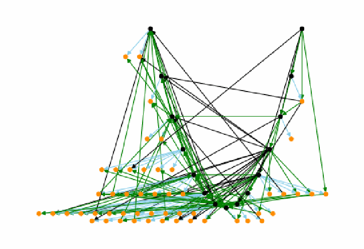
生の知識制約グラフ 70a の図です。66個のノードの間に緑・黒・水色の辺が多数交差しています。知識制約グラフを点と矢印で描いた図です。黒い点は代表ノード、橙の点は同値集合に属するほかのベクトルで、水色の辺は等しい、緑の辺はより大きい、黒の辺ははるかに大きいことを表します。
(a) Raw Graph 70a
(a) 未加工のグラフ 70a
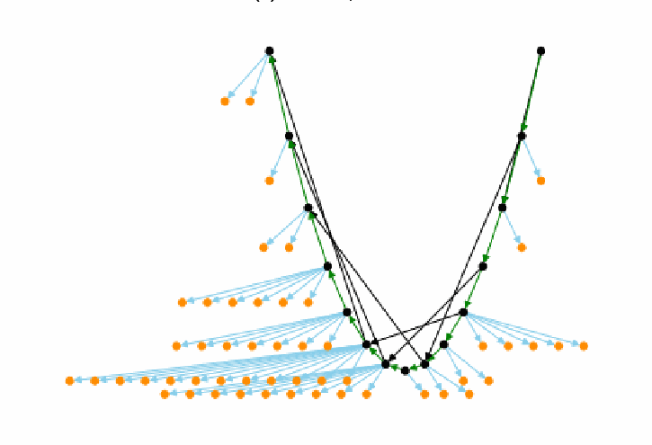
簡略化した知識制約グラフ 70a の図です。黒い代表ノードがV字形の最長経路をなし、そこから水色の辺で橙の同値集合のメンバーが扇状に広がり、黒い近道の辺が数本あります。知識制約グラフを点と矢印で描いた図です。黒い点は代表ノード、橙の点は同値集合に属するほかのベクトルで、水色の辺は等しい、緑の辺はより大きい、黒の辺ははるかに大きいことを表します。
(b) Simplified Graph 70a
(b) 簡略化したグラフ 70a
Fig. 6. Example Knowledge Constraint Graph
図 6. ナレッジ制約グラフの例
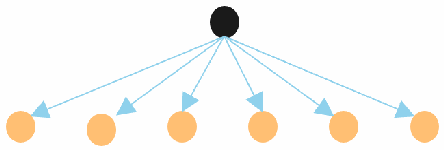
星形の部分グラフの図です。上の黒いノード1つから、下の6つの橙のノードへ水色の矢印が出ています。
Fig. 7. Example Equivalency Set Star Sub-graph
図 7. 同値集合のスター型部分グラフの例
4.2.1. Equivalency Sets
4.2.1. 同値集合
An important concept for constraint graphs is an equivalency set, which is a set of nodes that are defined to have equal significance (i.e., they should have the same CVSS score). They are represented as star sub-graphs; an example is shown in Figure 7. The parent node (the center of the star sub-graph) is the node in the equivalency set whose vector has the greatest frequency among a defined set of CVEs (see Tables 9 and 10). This node is called the “representative” node.
制約グラフの重要な概念に、同値集合があります。これは、重要度が等しいと定義される（すなわち、同じ CVSS スコアを持つべき）ノードの集合です。同値集合はスター型の部分グラフで表され、例を図 7 に示します。親ノード（スター型部分グラフの中心）は、同値集合のうち、そのベクトルが定義された CVE の集合の中で最も頻度が高いノードです（表 9 と表 10 を参照）。このノードを「代表」ノードと呼びます。
In a knowledge constraint graph, the representative nodes are displayed as black nodes. Other vectors that participate in equivalency sets are displayed as yellow nodes. Light blue edges represent equality and connect parent representative nodes to their children. Yellow nodes always have exactly one parent (through a light blue equality edge) as they can participate in only one equivalency set. Black nodes with no yellow node children represent equivalency sets of size 1.
ナレッジ制約グラフでは、代表ノードは黒いノードとして表示されます。同値集合に含まれるその他のベクトルは、黄色のノードとして表示されます。水色の辺は等しいことを表し、親の代表ノードをその子に接続します。黄色のノードは 1 つの同値集合にしか属せないため、（水色の等価の辺を通じて）常にちょうど 1 つの親を持ちます。黄色の子ノードを持たない黒いノードは、サイズ 1 の同値集合を表します。
4.2.2. Magnitude Measurements
4.2.2. 大きさの測定
Another important concept for constraint graphs is measuring the “magnitude” of the distance between nodes. If two nodes are connected by an edge, the label on the edge defines the magnitude. Thus, an edge x → y with a label of 0 indicates that x is equal to y (x = y) in severity. An edge x → y with a label of 1 indicates that x is greater than y (x > y) in severity. An edge x → y with a label of 2 indicates that x is much greater than y (x >> y) in severity.
制約グラフのもう 1 つの重要な概念は、ノード間の距離の「大きさ」の測定です。2 つのノードが辺で接続されている場合、辺のラベルが大きさを定義します。したがって、ラベルが 0 の辺 x → y は、x が y と深刻度で等しい（x = y）ことを示します。ラベルが 1 の辺 x → y は、x が y より深刻度で大きい（x > y）ことを示します。ラベルが 2 の辺 x → y は、x が y より深刻度ではるかに大きい（x >> y）ことを示します。
If two nodes x and y are not directly connected by an edge, then the magnitude is defined as the maximum magnitude of all edges on all paths between x and y. If there is no path between x and y, then the magnitude is undefined.
2 つのノード x と y が辺で直接接続されていない場合、大きさは、x と y の間のすべての経路上のすべての辺の大きさの最大値として定義されます。x と y の間に経路がない場合、大きさは未定義です。
4.2.3. Simplified Graphs
4.2.3. 簡略化したグラフ
Figure 6b is a simplified version of Figure 6a. All out-edges from the yellow nodes were changed to originate from their parent representative black node (found by traversing the one-per-node light blue edge backward to find the parent). All in-edges coming into yellow nodes were changed to make their destination be their black node representative parent. Given that each parent black node represents an equivalency set where the black node is equal in significance to all of its child yellow nodes, this simplification does not change the logic represented by the graph. Lastly, all redundant edges were removed. If an existing path could represent the logic conveyed by a single edge, then the edge was removed.
図 6b は図 6a を簡略化したものです。黄色のノードから出るすべての辺は、親の代表である黒いノードから出るように変更されました（ノードごとに 1 本の水色の辺を逆にたどって親を見つけます）。黄色のノードに入るすべての辺は、行き先がその代表である親の黒いノードになるように変更されました。親の黒いノードがそれぞれ、黒いノードがすべての子の黄色のノードと重要度が等しい同値集合を表すことを踏まえると、この簡略化はグラフが表す論理を変えません。最後に、冗長な辺がすべて除去されました。単一の辺が伝える論理を既存の経路で表せる場合、その辺は除去されました。
In Figure 6b, there is a single longest path that connects all of the equivalency sets by their representative black nodes. This feature is guaranteed to exist by the construction of the graphs. The first node on this path is the most significant vector (the one that should have the highest score). It is depicted in the upper right in all of the visualizations. Likewise, the least significant node is always on the upper left. Each black edge is a shortcut for a longer path of green edges. This indicates that a path of ‘>’ relationships may result in a ‘>>’ relationship (which is intuitive).
図 6b には、すべての同値集合をその代表である黒いノードで接続する、最長の経路が 1 本あります。この特徴は、グラフの構築方法によって存在することが保証されています。この経路の最初のノードは、最も重要度が高い（最も高いスコアを持つべき）ベクトルです。すべての可視化で、右上に描かれています。同様に、最も重要度の低いノードは常に左上にあります。各黒い辺は、緑の辺からなる、より長い経路の近道です。これは、「>」の関係の経路が「>>」の関係になり得ること（これは直観的です）を示しています。
4.3. Inconsistency Metrics for Knowledge Constraint Graphs
4.3. ナレッジ制約グラフの不整合メトリクス
When multiple human experts use the tool, the produced constraint graphs can be evaluated to determine their level of inconsistency with each other. The purpose of performing such measurements is to identify possible outliers that might indicate either 1) an inexperienced participant who should not have participated in the study or 2) a valid but very divergent view on vector severity.
複数の人間の専門家がツールを使用した場合、生成された制約グラフを評価して、互いの不整合のレベルを判断できます。こうした測定を行う目的は、1) 本研究に参加すべきでなかった経験の浅い参加者、または 2) ベクトルの深刻度に関する妥当だが大きく異なる見解のいずれかを示している可能性のある、外れ値を特定することです。
To measure inconsistencies, all pairs of produced graphs were compared with a pairwise approach. For each pair of graphs, the encoded relationships for all pairs of vectors were evaluated. In doing this, only the direction of the relationships was evaluated – not their magnitudes. Thus, greater than and much greater than were treated equally. If the graphs agreed on the relationship for a pair of vectors, that pair was marked as “consistent”. If the graphs disagreed on the relationship for a pair of vectors, that pair was marked as “inconsistent”. If a pair of graphs disagreed on the direction of an inequality (i.e., one said greater than and the other said less than), then that vector pair relationship was marked as “opposite inconsistent” (a more severe form).
不整合を測定するため、生成されたグラフのすべての組を、ペアワイズの方法で比較しました。グラフの各組について、ベクトルのすべての組のエンコードされた関係を評価しました。その際、評価したのは関係の向きだけで、大きさは評価していません。したがって、「大きい」と「はるかに大きい」は同等に扱われました。ベクトルの組の関係についてグラフが一致した場合、その組は「整合」と記録されました。ベクトルの組の関係についてグラフが一致しなかった場合、その組は「不整合」と記録されました。グラフの組が不等号の向きについて一致しなかった場合（すなわち、一方が大きいと言い、もう一方が小さいと言った場合）、そのベクトルの組の関係は「逆向き不整合」（より深刻な形）と記録されました。
For each pair of graphs, the number of inconsistent and opposite inconsistent relationships was obtained (note that the set of opposite inconsistent pairs is a subset of the inconsistent pairs). Dividing those numbers by the total number of relationships results in ratios for each metric. This gave inconsistent and opposite inconsistent ratios for each pair of graphs. From this, the mean inconsistent and opposite inconsistent ratios for each graph could then be computed by taking the mean of the measurements in which a particular graph participated (since each measurement is for a pair of graphs).
グラフの各組について、不整合および逆向き不整合の関係の数が得られました（逆向き不整合の組の集合は、不整合の組の部分集合であることに注意）。これらの数を関係の総数で割ると、各メトリクスの比率が得られます。これにより、グラフの各組について、不整合の比率と逆向き不整合の比率が得られました。ここから、各グラフについて、そのグラフが関与した測定値の平均を取ることで（各測定値はグラフの組に対するものであるため）、不整合の平均比率と逆向き不整合の平均比率を計算できました。
4.4. Voting Unification Algorithm
4.4. 投票統合アルゴリズム
This section discusses the algorithm for taking multiple knowledge representation graphs as input and unifying them into a single graph that represents a consensus of the inputs.
このセクションでは、複数のナレッジ表現グラフを入力として受け取り、それらを統合して、入力の合意を表す単一のグラフにするアルゴリズムを説明します。
4.4.1. Analysis of Votes
4.4.1. 投票の分析
The voting algorithm will evaluate all ordered pairs (x,y) where the node number of x is less than y. Thus, for every pair (x,y), (y,x) is excluded because that would be redundant. For each pair, votes will be tallied using a simple array [a,b,c] to represent the number of input graphs for which x < y (represented by a in the array), x = y (represented by b in the array), and x > y (represented by c in the array). At this stage of the analysis, >> is treated the same as >, and << is treated the same as < (only the direction needs to be known, not the magnitude).
投票アルゴリズムは、x のノード番号が y より小さいすべての順序対 (x,y) を評価します。したがって、すべての組 (x,y) について、(y,x) は冗長になるため除外されます。各組について、単純な配列 [a,b,c] を用いて、x < y となる入力グラフの数（配列の a で表す）、x = y となる数（配列の b で表す）、x > y となる数（配列の c で表す）として、投票が集計されます。この分析段階では、>> は > と同じ、<< は < と同じに扱われます（知る必要があるのは向きだけで、大きさではありません）。
A transformation is then made to more accurately represent the x = y votes. To see the need for this, consider the following example. A pair (x,y) may have a set of votes [4,2,4] (4 less-than votes, 2 equal votes, and 4 greater-than votes). This should result in a decision for equal even though equal has the lowest number of votes. Each of the two votes that conflict (one greater than and one less than) is interpreted as a vote for equal. Since the experts cannot agree, the vectors are likely so close in significance that they should be marked as equal. To make this adjustment, pairs of opposing votes – one less than and one greater than – are converted into a single vote for equal because that changes the difference between the less-than votes and equal votes by 1 and between the greater-than votes and the equal votes by 1. The transformation may be applied multiple times. In this example, [4,2,4] is transformed into [0,6,0] by applying the transformation four times. Consider another example where the transformation is applied to a vector pair with a set of votes [2,1,3], which will also result in a decision for equal. The instances of both greater-than and less-than votes get transformed into equal votes that result in a final transformed vote tally of [0,3,1]. If there is a tie in the final set of transformed votes (e.g., [0,3,3]), the non-equal one is awarded the decision (either less than or greater than). These transformed vectors along with the ones that did not require any transformation are then fed into the prioritization stage of the algorithm.
次に、x = y の投票をより正確に表すための変換が行われます。この必要性を理解するために、次の例を考えます。組 (x,y) の投票の集合が [4,2,4]（小さいという投票が 4 票、等しいという投票が 2 票、大きいという投票が 4 票）になるとします。等しいの票数が最も少なくても、この結果は等しいという判断になるべきです。矛盾する 2 票（大きいという投票が 1 票、小さいという投票が 1 票）はそれぞれ、等しいへの投票と解釈されます。専門家の意見が一致しないため、そのベクトルはおそらく重要度が非常に近いため、等しいと記録すべきです。この調整を行うため、対立する投票の組、すなわち小さいという投票が 1 票と大きいという投票が 1 票は、1 票の等しいに変換されます。これにより、小さいの票と等しいの票の差が 1、大きいの票と等しいの票の差が 1 変わるためです。この変換は複数回適用できます。この例では、変換を 4 回適用することで、[4,2,4] は [0,6,0] に変換されます。もう 1 つの例として、投票の集合が [2,1,3] のベクトルの組に変換を適用する場合を考えます。この場合も、等しいという判断になります。大きいと小さいの両方の投票が等しいの投票に変換され、最終的な変換後の投票集計は [0,3,1] になります。変換後の最終的な投票の集合で同数になった場合（たとえば [0,3,3]）は、等しい以外のほう（小さいまたは大きいのいずれか）が判断として採用されます。これらの変換後のベクトルと、変換が不要だったものは、アルゴリズムの優先順位付け段階に渡されます。
4.4.2. Priority Ordering
4.4.2. 優先順位付け
The algorithm next orders all pairs of vectors by priority order (to be defined by three sorting approaches) such that the first pairs are those for which there is the most confidence in the experts’ opinion, and the last pairs are those for which there is the least confidence.
アルゴリズムは次に、（3 つの並べ替えのアプローチで定義される）優先順位に従って、ベクトルのすべての組を並べます。これにより、最初の組は専門家の意見に対する確信度が最も高いもの、最後の組は確信度が最も低いものになります。
The pairs are sorted first in descending order by the maximum number of votes received for the winning category (i.e., less than, equal, or greater than). For example, for a pair with votes [0,6,2], the maximum number of votes is 6 (for equal, in this case). The intuition is that if a pair has a higher number of maximum votes, then its decision is stronger (i.e., supported by more human experts) than a pair with a lower maximum number of votes. Thus, [6,4,0] is stronger than [0,5,5].
組はまず、勝った区分（すなわち、小さい、等しい、大きい）が得た最大の票数の降順で並べ替えられます。たとえば、投票が [0,6,2] の組の場合、最大の票数は 6 です（この場合は等しいの票）。その直観は、組の最大票数が多いほど、その判断は、最大票数が少ない組より強い（すなわち、より多くの人間の専門家に支持されている）ということです。したがって、[6,4,0] は [0,5,5] より強いことになります。
The authors considered applying this sort using the vector values prior to the equality transformation of conflicting votes (presented in Section 4.4.1). They decided against that ap-proach because conflicting votes for > and < are not a sign of human certainty. This decision has a byproduct of increasing the certainty measurement for = votes, but this effect is limited (capped at half of the total number of possible votes) because a pair of opposing votes gets transformed into a single = vote in the transformation.
著者らは、（セクション 4.4.1 で示した）矛盾する投票の等価変換の前のベクトル値を使って、この並べ替えを適用することを検討しました。しかし、> と < への矛盾する投票は人間の確信の表れではないため、そのアプローチは採用しないことにしました。この決定により、= の投票の確信度の測定値が増加するという副次的な影響がありますが、変換では対立する投票の組が 1 票の = に変換されるため、この影響は（可能な総投票数の半分を上限として）限られます。
For pairs with the same maximum value, there is a secondary sort in ascending order by the number of opposite votes in the original voting (prior to the transformation). The intuition is that pairs that have few opposite votes (votes for both less than and greater than) are considered to be supported more strongly by the experts than pairs with many opposite votes.
最大値が同じ組については、（変換前の）元の投票における対立する票の数の昇順で、2 番目の並べ替えを行います。その直観は、対立する票（小さいと大きいの両方への投票）が少ない組は、対立する票が多い組より、専門家に強く支持されているとみなされるということです。
Finally, for pairs that have values that tie in both the first and secondary sort, there is a third sort added to guarantee a total ordering of the pairs. It gives priority to processing vector pairs that are most often seen in the wild. More specifically, each vector pair is sorted in descending order by the frequency of the vector in the pair that most frequently occurs within CVE in the National Vulnerability Database (NVD). Note that this third sort is rarely used and is not strictly necessary, but it conveniently removes non-determinism so that the algorithm will always produce exactly the same answer.
最後に、1 番目の並べ替えと 2 番目の並べ替えの両方で値が同じになる組には、組の全順序を保証するために 3 番目の並べ替えを追加します。これは、実際に最もよく見られるベクトルの組の処理を優先します。より具体的には、各ベクトルの組は、その組のうち、国家脆弱性データベース（NVD）の CVE の中で最も頻繁に出現するベクトルの頻度の降順で並べ替えられます。この 3 番目の並べ替えはまれにしか使用されず、厳密には必要ではありませんが、非決定性を排除して、アルゴリズムが常にまったく同じ答えを生成するようにするために便利です。
4.4.3. Unified Graph Construction
4.4.3. 統合グラフの構築
The unified knowledge constraint graph is constructed by iterating over the pairs in priority order and attempting to add edges based on the pair voting information. The unified graph is initially empty, and nodes and edges are added as the algorithm evaluates each pair. Occasionally, the addition of an edge will violate the directed acyclic nature of the graph by creating a cycle. Those edges are not added. Rather, they represent lower priority (less certain) relationships that contradict higher priority (more certain) relationships. Cycles are not allowed because they would represent logical inconsistencies (e.g., x > y > z > x).
統合ナレッジ制約グラフは、優先順位に従って組を反復処理し、組の投票情報に基づいて辺の追加を試みることで構築されます。統合グラフは最初は空で、アルゴリズムが各組を評価するにつれてノードと辺が追加されます。辺を追加すると、閉路ができてグラフの有向非巡回の性質に反する場合があります。そのような辺は追加されません。むしろ、そうした辺は、より優先順位が高い（より確実な）関係と矛盾する、優先順位が低い（確実性が低い）関係を表します。閉路は論理的な不整合（たとえば x > y > z > x）を表すことになるため、許可されません。
For each pair (x,y), the algorithm attempts to add an edge to the initially empty unified constraint graph based on the maximum vote calculation (i.e., for less than, equal, or greater than). If x = y, it adds an edge x → y with the label 0 (to represent equality). If x > y, one determines the magnitude of the relationship (see above) and adds an edge x → y with a label of 1 for greater than and 2 for much greater than. If x < y, one determines the magnitude of the relationship (see above) and adds an edge y → x (note the reversal of the order of x and y) with a label of 1 for greater than and 2 for much greater than.
各組 (x,y) について、アルゴリズムは、最大票の計算（すなわち、小さい、等しい、大きいのいずれか）に基づいて、最初は空の統合制約グラフに辺の追加を試みます。x = y の場合、ラベル 0 の辺 x → y を追加します（等しいことを表すため）。x > y の場合、関係の大きさを（上記のとおり）判定し、大きいならラベル 1、はるかに大きいならラベル 2 の辺 x → y を追加します。x < y の場合、関係の大きさを（上記のとおり）判定し、大きいならラベル 1、はるかに大きいならラベル 2 の辺 y → x を追加します（x と y の順序が逆になることに注意）。
In some circumstances the graph construction algorithm may rearrange edges in order to simplify the graph, but the encoded logic is always preserved. For example, if a set of vectors are all equal, the algorithm will form a star sub-graph of edges that represent equality as opposed to creating a path of edges that represent equality. This is for simplicity of the visualization, but it also helps in writing the graph algorithms that assume certain graph structures.
状況によっては、グラフ構築アルゴリズムが、グラフを簡略化するために辺を並べ替える場合がありますが、エンコードされた論理は常に保たれます。たとえば、ベクトルの集合がすべて等しい場合、アルゴリズムは、等しいことを表す辺の経路を作るのではなく、等しいことを表す辺のスター型部分グラフを形成します。これは可視化を単純にするためですが、特定のグラフ構造を前提とするグラフアルゴリズムの記述にも役立ちます。
4.4.4. Description of Constructed Graph
4.4.4. 構築したグラフの説明
Constructed unified graphs have the same form as simplified raw graphs. In other words, they look the same (see Figure 6b as an example). A constructed unified graph usually totally orders the input vectors but is not guaranteed to do so, especially in the presence of contradictory or inconsistent expert opinion. However, the unified graph will have a longest path of edges labeled with either 1 or 2 (greater than or much greater than). Each node on this longest path will represent an equivalency set – a set of nodes that were defined to be of equal significance. To represent the equivalency sets, each node on the longest path is at the center of a star sub-graph constructed with edges labeled 0, where each child node is equal to the representative parent (the center of the star). If a node on the longest path is not equal with any other node, its star graph will be size 1 (containing just itself).
構築された統合グラフは、簡略化された未加工のグラフと同じ形式です。言い換えれば、見た目が同じです（例として図 6b を参照）。構築された統合グラフは通常、入力ベクトルを全順序付けしますが、特に矛盾した、または不整合な専門家の意見がある場合は、そうなることが保証されているわけではありません。ただし、統合グラフには、ラベル 1 または 2（大きい、またははるかに大きい）の辺からなる最長の経路があります。この最長の経路上の各ノードは、重要度が等しいと定義されたノードの集合である、同値集合を表します。同値集合を表すため、最長の経路上の各ノードは、ラベル 0 の辺で構築されたスター型部分グラフの中心にあり、各子ノードは代表である親（スターの中心）と等しくなります。最長の経路上のノードがほかのどのノードとも等しくない場合、そのスターグラフのサイズは 1（そのノード自身だけを含む）になります。
5. Data Collection and Processing
5. データの収集と処理
This section discusses how human expert opinion was collected and processed in order to create unified knowledge constraint graphs. Sub-section 5.1 discusses the dataset of analyzed vectors while Sub-section 5.2 describes the pool of volunteer analysts. Sub-section 5.3 presents the produced individual analyst knowledge constraint graphs. Sub-section 5.4 provides the measurements of inconsistency taken on analyst data. Sub-section 5.5 presents the unified knowledge constraint graph built from all analyst data. Sub-section 5.6 concludes the section by discussing how the number of equivalency sets identified in the unified graph does not represent the discovery of some optimal number.
このセクションでは、統合ナレッジ制約グラフを作成するために、人間の専門家の意見をどのように収集して処理したかを説明します。サブセクション 5.1 では分析したベクトルのデータセットを説明し、サブセクション 5.2 ではボランティアのアナリストのプールを説明します。サブセクション 5.3 では、作成された個々のアナリストのナレッジ制約グラフを示します。サブセクション 5.4 では、アナリストのデータに対して行った不整合の測定を示します。サブセクション 5.5 では、すべてのアナリストのデータから構築した統合ナレッジ制約グラフを示します。サブセクション 5.6 では、統合グラフで識別された同値集合の数が、何らかの最適な数の発見を表すものではないことを論じて、このセクションを締めくくります。
While this section focuses on the unified knowledge constraint graph using all inputs, many such unified graphs will be created using differing subsets of the input data for statistical reasons (i.e., differing subsets of input knowledge constraint graphs).
このセクションでは、すべての入力を使用した統合ナレッジ制約グラフに焦点を当てますが、統計上の理由から、入力データの異なる部分集合（すなわち、入力ナレッジ制約グラフの異なる部分集合）を使用して、このような統合グラフが多数作成されます。
5.1. Data Set of Analyzed Vectors
5.1. 分析したベクトルのデータセット
For this research, human experts were asked to analyze 66 of the 2496 CVSS v3 vectors that had a non-zero impact (2.64 % of them). Note that there are 2592 vectors in total, but only 2496 have a score other than 0.0. The vectors chosen were those that the NVD mapped the CVE vulnerabilities to most frequently using the NVD CVSS data available on 2021-01-08. This set of 66 vectors covered 90 % of the CVEs. The 66 vectors chosen are shown in Appendix B in Tables 9 and 10, along with their respective frequencies.
本研究では、人間の専門家に、影響がゼロでない 2496 個の CVSS v3 ベクトルのうち 66 個（その 2.64 %）を分析するよう依頼しました。ベクトルは全部で 2592 個ありますが、0.0 以外のスコアを持つのは 2496 個だけであることに注意してください。選択したベクトルは、2021 年 1 月 8 日時点で利用可能だった NVD の CVSS データを用いて、NVD が CVE の脆弱性を最も頻繁に対応付けたものです。この 66 個のベクトルの集合は、CVE の 90 % をカバーしていました。選択した 66 個のベクトルを、それぞれの頻度とともに、付録 B の表 9 と表 10 に示します。
5.2. Volunteer Participants
5.2. ボランティア参加者
The CVSS v3 equations were designed to represent human expert knowledge – in particular, CVSS SIG knowledge. Thus, to measure how well the equations reflect current CVSS SIG domain knowledge, the domain knowledge of a group of 12 volunteers from the CVSS SIG membership of 2021 was leveraged. The 12 volunteers are the domain expert co-authors as well as the second author. The first author was the principle investigator.
CVSS v3 方程式は、人間の専門家の知識、特に CVSS SIG の知識を表すように設計されました。したがって、方程式が現在の CVSS SIG の領域知識をどの程度反映しているかを測定するため、2021 年の CVSS SIG メンバーのうち 12 人のボランティアからなるグループの領域知識を活用しました。この 12 人のボランティアは、領域専門家である共著者と第 2 著者です。第 1 著者は主任研究者でした。
To support this research, the CVSS SIG domain experts each represented their domain knowledge of computer vulnerability types as a mathematical graph structure. In doing so, the domain experts compared vulnerabilities using the CVSS philosophy of evaluating a vulnerability’s general severity apart from any particular installation environment. This was an attempt to mitigate the possibility that the domain experts would be influenced by their particular security domain or specialty. Additionally, the volunteers were instructed to compare vulnerabilities based on their own personal expert opinions (not based on the existing CVSS scoring). This was an attempt to eliminate bias based on the expert’s knowledge of the CVSS scores for certain vectors and/or use of CVSS calculators.
この研究を支援するため、CVSS SIG の領域専門家はそれぞれ、コンピュータの脆弱性タイプに関する自らの領域知識を、数学的なグラフ構造として表現しました。その際、領域専門家は、特定のインストール環境とは無関係に脆弱性の一般的な深刻度を評価するという CVSS の考え方を用いて、脆弱性を比較しました。これは、領域専門家が自らの特定のセキュリティ分野や専門に影響される可能性を緩和する試みでした。さらに、ボランティアは、（既存の CVSS スコアリングではなく）自らの専門家としての意見に基づいて脆弱性を比較するよう指示されました。これは、特定のベクトルの CVSS スコアに関する専門家の知識や、CVSS 計算ツールの使用（またはその両方）に基づくバイアスを排除する試みでした。
Table 4. Statistics on CVSS SIG Produced Knowledge Constraint Graphs
表 4. CVSS SIG が作成したナレッジ制約グラフの統計
| Graph | Nodes | Raw Graph Edges | Simplified Graph Edges | Analysis Time (hrs) |
|---|---|---|---|---|
| 02c | 66 | 194 | 67 | 3.8 |
| 3d6 | 66 | 242 | 72 | 6.3 |
| 5fd | 66 | 236 | 69 | 1.9 |
| 6e5 | 66 | 256 | 69 | 5.5 |
| 70a | 66 | 166 | 72 | 2.1 |
| 88d | 66 | 228 | 70 | 8.1 |
| 908 | 66 | 247 | 72 | 1.4 |
| 977 | 66 | 142 | 67 | 0.7 |
| 98a | 66 | 284 | 68 | 6.5 |
| d3d | 66 | 186 | 69 | 1.7 |
| f00 | 66 | 187 | 70 | 1.5 |
| f59 | 66 | 224 | 69 | 2.5 |
| Overall Mean | 66 | 216 | 69.5 | 3.5 |
| グラフ | ノード | 未加工グラフの辺 | 簡略化グラフの辺 | 分析時間（時間） |
|---|---|---|---|---|
| 02c | 66 | 194 | 67 | 3.8 |
| 3d6 | 66 | 242 | 72 | 6.3 |
| 5fd | 66 | 236 | 69 | 1.9 |
| 6e5 | 66 | 256 | 69 | 5.5 |
| 70a | 66 | 166 | 72 | 2.1 |
| 88d | 66 | 228 | 70 | 8.1 |
| 908 | 66 | 247 | 72 | 1.4 |
| 977 | 66 | 142 | 67 | 0.7 |
| 98a | 66 | 284 | 68 | 6.5 |
| d3d | 66 | 186 | 69 | 1.7 |
| f00 | 66 | 187 | 70 | 1.5 |
| f59 | 66 | 224 | 69 | 2.5 |
| 全体の平均 | 66 | 216 | 69.5 | 3.5 |
The human studies portion of this research was conducted with the approval of the NIST Research Protections office under the study entitled “Metrics Generation with the NIST Human Knowledge Encoder Toolkit” (Study #: ITL-2020-0227).
本研究のヒトを対象とする部分は、「Metrics Generation with the NIST Human Knowledge Encoder Toolkit」と題する研究（Study #: ITL-2020-0227）として、NIST 研究保護室の承認を得て実施されました。
5.3. Produced Knowledge Constraint Graphs
5.3. 作成されたナレッジ制約グラフ
The 12 domain experts each produced a knowledge constraint graph that represented their CVSS domain knowledge using the NIST Knowledge Encoder tool. These graphs are provided in Appendix C. Table 11 contains the raw graphs, and Table 12 contains the corresponding simplified graphs in which the redundant edges have been removed.
12 人の領域専門家はそれぞれ、NIST ナレッジエンコーダーツールを用いて、自らの CVSS の領域知識を表すナレッジ制約グラフを作成しました。これらのグラフは付録 C に示しています。表 11 に未加工のグラフを、表 12 に冗長な辺を除去した対応する簡略化グラフを示します。
The mean creation time for the set of graphs was 3.5 hours with a minimum of 0.7 and a maximum of 8.1. There are 66 nodes for all graphs because 66 vectors were analyzed. The number of edges varies because the humans ordered the nodes differently as they made decisions for the human-directed binary search algorithm. The mean number of edges for the raw graphs is 216 with a minimum of 142 and a maximum of 284. The mean number of edges for the simplified graphs is 69.5 with a minimum of 67 and a maximum of 72. The statistics for each graph are provided in Table 4.
グラフの集合の平均作成時間は 3.5 時間で、最小は 0.7 時間、最大は 8.1 時間でした。66 個のベクトルを分析したため、すべてのグラフでノード数は 66 です。辺の数が異なるのは、人間が主導する二分探索アルゴリズムのために判断を下す際に、人間がノードを異なる順序で並べたためです。未加工グラフの辺の平均数は 216 で、最小は 142、最大は 284 でした。簡略化グラフの辺の平均数は 69.5 で、最小は 67、最大は 72 でした。各グラフの統計を表 4 に示します。
5.4. Knowledge Constraint Graph Inconsistency Measurements
5.4. ナレッジ制約グラフの不整合の測定
The inconsistency and opposite inconsistency of the 12 knowledge constraint graphs were analyzed. These metrics were defined in Section 4.3. The results are shown in Table 5. The overall mean inconsistency was 22.5 %, and the opposite inconsistency was 14.4 %. Thus, the human experts were in general agreement, although there were certainly differences for certain pairs of vectors.
12 個のナレッジ制約グラフの不整合と逆向き不整合を分析しました。これらのメトリクスはセクション 4.3 で定義しました。結果を表 5 に示します。全体の平均不整合は 22.5 %、逆向き不整合は 14.4 % でした。したがって、特定のベクトルの組については確かに違いがあったものの、人間の専門家の意見は概ね一致していました。
Table 5. Mean Inconsistency and Opposite Inconsistency Results
表 5. 平均不整合と逆向き不整合の結果
| Graph | Mean Inconsistency Percent | Mean Opposite Inconsistency Percent |
|---|---|---|
| 02c | 20.8 | 11.5 |
| 3d6 | 17.1 | 10.3 |
| 5fd | 20.8 | 13.8 |
| 6e5 | 19.1 | 13.0 |
| 70a | 25.1 | 13.5 |
| 88d | 20.7 | 13.8 |
| 908 | 20.9 | 14.2 |
| 977 | 35.2 | 22.7 |
| 98a | 21.1 | 14.7 |
| d3d | 25.2 | 16.2 |
| f00 | 25.8 | 17.5 |
| f59 | 19.7 | 11.2 |
| Overall Mean | 22.5 | 14.4 |
| グラフ | 平均不整合の割合（%） | 平均逆向き不整合の割合（%） |
|---|---|---|
| 02c | 20.8 | 11.5 |
| 3d6 | 17.1 | 10.3 |
| 5fd | 20.8 | 13.8 |
| 6e5 | 19.1 | 13.0 |
| 70a | 25.1 | 13.5 |
| 88d | 20.7 | 13.8 |
| 908 | 20.9 | 14.2 |
| 977 | 35.2 | 22.7 |
| 98a | 21.1 | 14.7 |
| d3d | 25.2 | 16.2 |
| f00 | 25.8 | 17.5 |
| f59 | 19.7 | 11.2 |
| 全体の平均 | 22.5 | 14.4 |
Table 6. Vectors Initially Assigned the Highest Severity in the Unmodified Graph f00
表 6. 未修正のグラフ f00 で当初に最も高い深刻度が割り当てられたベクトル
| CVSS:3 |
| CVSS:3 |
| CVSS:3 |
| CVSS:3 |
| CVSS:3 |
| CVSS:3 |
5.4.1. Graph f00
5.4.1. グラフ f00
Graph f00 (Figure 11k) was an extreme outlier that was discovered to have a significant but correctable error. Its initial mean inconsistency was 82.1 % and opposite inconsistency was 73.8 %. Upon inspection, it was discovered that the analyst creating f00 with the tool did all of their ratings backwards. To fix this, the edges in their graph were simply reversed (and checked with the participant). The resulting mean inconsistency metric then dropped to 25.8 % and opposite inconsistency to 17.5 %. The opposite ratings became obvious by looking at the vectors that they rated as most severe and those that they rated as least severe (see Tables 6 and 7.
グラフ f00（図 11k）は極端な外れ値で、重大だが修正可能な誤りがあることがわかりました。当初の平均不整合は 82.1 %、逆向き不整合は 73.8 % でした。調べたところ、ツールで f00 を作成したアナリストが、すべての評価を逆向きに行っていたことがわかりました。これを修正するため、そのグラフの辺を単純に逆にしました（参加者にも確認しました）。その結果、平均不整合メトリクスは 25.8 %、逆向き不整合は 17.5 % に低下しました。評価が逆であることは、最も深刻と評価されたベクトルと最も深刻でないと評価されたベクトルを見ることで明らかになりました（表 6 と表 7 を参照）。
Table 7. Vectors Initially Assigned the Lowest Severity in the Unmodified Graph f00
表 7. 未修正のグラフ f00 で当初に最も低い深刻度が割り当てられたベクトル
| CVSS:3 |
| CVSS:3 |
| CVSS:3 |
| CVSS:3 |
| CVSS:3 |
| CVSS:3 |
5.4.2. Graph 977
5.4.2. グラフ 977
After fixing graph f00, graph 977 (Figure 11h) was the most significant outlier. Its mean inconsistency and opposite inconsistency was 35.2 % and 22.7 % – the greatest among the graphs (see Table 5). While these ratios were not as excessively high as the original graph f00, they – combined with the fact that the participant spent only 43 minutes on the analysis – induced concerns about data quality (the mean analysis time for all analysts was 3.5 hours). To address this, the participant offered to perform their analysis again and with greater care. The analyst spent 48 minutes the second time and produced graph 382 (not shown). Supporting the validity of the original graph 977, graph 382 had mean inconsistency metrics that were very similar to 977 (32.7 % and 21.2 %). However, graphs 977 and 382 were inconsistent between themselves (27.9 % inconsistent and 13.3 % opposite inconsistent).
グラフ f00 を修正した後は、グラフ 977（図 11h）が最も顕著な外れ値でした。その平均不整合と逆向き不整合は 35.2 % と 22.7 % で、グラフの中で最大でした（表 5 を参照）。これらの割合は、元のグラフ f00 ほど極端に高くはありませんでしたが、参加者が分析に費やした時間がわずか 43 分だった（全アナリストの平均分析時間は 3.5 時間）ことと合わせて、データ品質への懸念を生じさせました。これに対処するため、参加者は、より慎重に分析をやり直すことを申し出ました。アナリストは 2 回目に 48 分を費やし、グラフ 382（図示せず）を作成しました。元のグラフ 977 の妥当性を裏付ける形で、グラフ 382 の平均不整合メトリクスは 977 のものと非常に近い値（32.7 % と 21.2 %）でした。ただし、グラフ 977 と 382 の間は不整合でした（27.9 % が不整合、13.3 % が逆向き不整合）。
Uncertain of how to proceed with this, a complete set of evaluation metrics was run three times, and the final overall results were compared (using all analyst input). For the three trials, graph 977 was used first, followed by graph 382, and then a graph was generated by unifying graphs 977 and 382 using the voting algorithm. Fortunately, the final results varied little for the three trials (the variation in the primary measurement statistics were at most .04). This is attributed to the voting algorithm smoothing out discrepancies since there were a total of 12 graphs voting. Since it did not matter which of the three graphs was used and to avoid any possible perception of inappropriately manipulating the input data, the originally submitted graph 977 was used in the experiments. Graph 382 and the generated unified graph (that had combined graphs 977 and 382) were discarded.
これにどう対処すべきか判断できなかったため、評価メトリクスの完全な一式を 3 回実行し、（すべてのアナリストの入力を使って）最終的な全体の結果を比較しました。3 回の試行では、最初にグラフ 977、次にグラフ 382、そして投票アルゴリズムでグラフ 977 と 382 を統合して生成したグラフを使用しました。幸い、最終的な結果は 3 回の試行でほとんど変わりませんでした（主要な測定統計量の変動は最大でも 0.04 でした）。これは、合計 12 個のグラフが投票したため、投票アルゴリズムが不一致をならしたためと考えられます。3 つのグラフのどれを使用しても問題なく、また入力データを不適切に操作したという疑いを避けるため、実験には当初提出されたグラフ 977 を使用しました。グラフ 382 と、生成された統合グラフ（グラフ 977 と 382 を組み合わせたもの）は破棄しました。
5.5. Unified Knowledge Constraint Graph
5.5. 統合ナレッジ制約グラフ
The 12 CVSS SIG knowledge constraint graphs created using the tool from Section 4.1 were combined into a single unified constraint graph using the voting algorithm from Section 4.4. This unified graph is shown in Figure 8. It has 66 nodes, each reflecting the 66 analyzed vectors. It has 71 edges that order the equivalency sets, define members within equivalency sets, and provide distance constraints. There are 16 equivalency sets; the smallest is 1 vector, and the largest is 12 vectors. The longest path is 16, which traverses the representative nodes for each equivalency set. The 7 black edges represent much-greater-than relationships; the 14 green edges represent greater-than relationships; and the 50 light blue edges represent equality. While not guaranteed by the voting algorithm, this graph totally ordered the equivalency sets. In creating this graph, 130 of the 2145 proposed edges (6.1 %) were discarded due to lower confidence relationships that contradicted previously added higher confidence relationships. This is explained in Section 4.4.3.
セクション 4.1 のツールを用いて作成した 12 個の CVSS SIG ナレッジ制約グラフを、セクション 4.4 の投票アルゴリズムを用いて 1 つの統合制約グラフに統合しました。この統合グラフを図 8 に示します。ノードは 66 個で、分析した 66 個のベクトルをそれぞれ反映しています。辺は 71 本で、同値集合の順序付け、同値集合内のメンバーの定義、距離制約の提供を担います。同値集合は 16 個あり、最小は 1 個のベクトル、最大は 12 個のベクトルです。最長の経路は 16 で、各同値集合の代表ノードを通ります。7 本の黒い辺ははるかに大きいという関係を、14 本の緑の辺は大きいという関係を、50 本の水色の辺は等しいことを表します。投票アルゴリズムでは保証されていないものの、このグラフは同値集合を全順序付けしました。このグラフの作成では、提案された 2145 本の辺のうち 130 本（6.1 %）が、先に追加された確信度の高い関係と矛盾する確信度の低い関係であったため、破棄されました。これはセクション 4.4.3 で説明しています。
5.6. Optimal Number of Equivalency Sets
5.6. 同値集合の最適な数
The 16 equivalency sets in the unified graph do not indicate the discovery of some optimal number of equivalency sets for CVSS. Rather, the number of equivalency sets grows with
統合グラフの 16 個の同値集合は、CVSS にとって最適な同値集合の数が発見されたことを示すものではありません。むしろ、同値集合の数は、
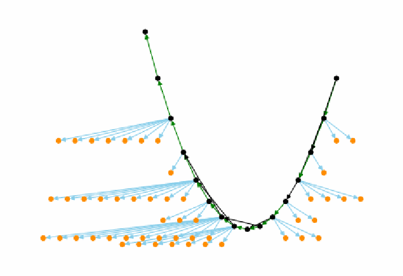
統合した知識制約グラフの図です。黒い代表ノードが緑の辺（一部は黒の辺）で結ばれたV字形の経路をなし、多くの代表ノードから水色の辺で橙のノードが扇状に広がっています。知識制約グラフを点と矢印で描いた図です。黒い点は代表ノード、橙の点は同値集合に属するほかのベクトルで、水色の辺は等しい、緑の辺はより大きい、黒の辺ははるかに大きいことを表します。
Fig. 8. Unified Knowledge Constraint Graph
図 8. 統合ナレッジ制約グラフ
the number of vectors analyzed. It might plateau at some optimal number, but this research effort does not have sufficient data to evaluate that. What it can show is that for up to 66 vectors, an increasing number of vectors analyzed results in an increasing number of equivalency sets generated. This can be seen in Figure 9. The small dots of different colors represent the individual knowledge constraint graphs created from the tool from each human expert with a specific number of input vectors. The lines of small dots higher up show analysts who rarely used the equal button. The larger black dots toward the bottom represent the unified knowledge constraint graphs generated using all input graphs and an increasing number of input vectors (from 1 to 66). For comparison with CVSS v3, note that CVSS was designed using just five equivalency sets (i.e., the qualitative severity levels: None, Low, Medium, High, and Critical).
分析したベクトルの数とともに増加します。ある最適な数で頭打ちになる可能性はありますが、本研究の取り組みには、それを評価するのに十分なデータがありません。示せるのは、66 個までのベクトルについては、分析するベクトルの数が増えるにつれて、生成される同値集合の数が増えるということです。これは図 9 で確認できます。異なる色の小さな点は、それぞれの人間の専門家が、特定の数の入力ベクトルでツールを用いて作成した、個々のナレッジ制約グラフを表します。上方にある小さな点の線は、等しいボタンをほとんど使用しなかったアナリストを示します。下方にある大きな黒い点は、すべての入力グラフと、増加する入力ベクトルの数（1 から 66）を用いて生成した、統合ナレッジ制約グラフを表します。CVSS v3 との比較のために、CVSS は 5 個の同値集合（すなわち、定性的な深刻度レベルの None、Low、Medium、High、Critical）だけで設計されたことに注意してください。
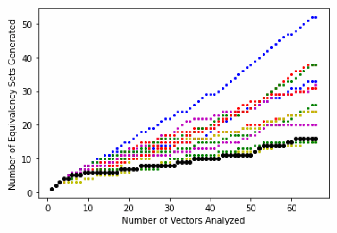
散布図です。横軸は「分析したベクトル数」（0〜66、目盛りは 0、10、20、30、40、50、60）、縦軸は「生成された同値集合数」（目盛りは 0、10、20、30、40、50）です。個々の分析者のグラフを表す小さな色付きの点は異なる速さで増え、最も高い青の点は66ベクトルで約52、ほかは約15〜38に達します。統合グラフを表す大きな黒い点は最も緩やかに増え、66ベクトルで16に達します。
Fig. 9. Equivalency Sets Produced per Number of Vectors Analyzed (legend: large black dots are for the unified graph, and small colored dots are for individual analyst graphs)
図 9. 分析したベクトル数ごとに生成された同値集合（凡例: 大きな黒い点は統合グラフ、小さな色付きの点は個々のアナリストのグラフ）
6. Measurement Approach
6. 測定アプローチ
This section discusses a general metric-agnostic approach to measuring the inconsistencies between the scores in CVSS v3 relative to the encoded CVSS SIG domain knowledge. This approach will be applied to three different metrics and the results provided in Section 7.
このセクションでは、CVSS v3 のスコアと、エンコードされた CVSS SIG の領域知識との間の不整合を測定するための、メトリクスに依存しない一般的なアプローチを説明します。このアプローチは 3 つの異なるメトリクスに適用され、結果はセクション 7 に示します。
6.1. Consistent Scoring Systems
6.1. 整合的なスコアリングシステム
This subsection defines the terms “scoring system” and “consistent scoring system”.
このサブセクションでは、「スコアリングシステム」と「整合的なスコアリングシステム」という用語を定義します。
6.1.1. Scoring System Definition
6.1.1. スコアリングシステムの定義
For the purposes of this work, a scoring system is defined as a mapping of vectors to scores. Given any CVSS vector, a scoring system produces a score for that vector. CVSS v3 is an important example of one of many possible scoring systems.
本研究の目的では、スコアリングシステムを、ベクトルからスコアへの対応付けと定義します。任意の CVSS ベクトルが与えられると、スコアリングシステムはそのベクトルのスコアを生成します。CVSS v3 は、多数あり得るスコアリングシステムの 1 つの重要な例です。
6.1.2. Consistent Scoring System Definition
6.1.2. 整合的なスコアリングシステムの定義
This work defines a consistent scoring system as one that conforms to a particular knowledge constraint graph. Scoring systems may or may not be consistent with a constraint graph. For a scoring system to be consistent with a graph, the scores assigned to each vector must satisfy the constraints defined by the edges in the graph (both the direction and magnitude of the edges in a path between vectors). Each edge defines a direction between two vectors x and y and a relationship (>, >>, or =).
本研究では、整合的なスコアリングシステムを、特定のナレッジ制約グラフに適合するものと定義します。スコアリングシステムは、制約グラフと整合する場合もしない場合もあります。スコアリングシステムがグラフと整合するためには、各ベクトルに割り当てられたスコアが、グラフの辺で定義された制約（ベクトル間の経路にある辺の向きと大きさの両方）を満たさなければなりません。各辺は、2 つのベクトル x と y の間の向きと、関係（>、>>、または =）を定義します。
If an edge x → y is labeled >, then the scoring system must map x to a score that is greater than y. If an edge x → y is labeled with >> (much greater than), then the value of x must be greater than the value of y by some constant associated with the graph. If an edge x → y is labeled with =, then the scoring system must map x and y to the same score. Note that the label < never appears on an edge because it is not necessary; the direction of the edge represents the direction of the inequality.
辺 x → y のラベルが > の場合、スコアリングシステムは x を y より大きいスコアに対応付けなければなりません。辺 x → y のラベルが >>（はるかに大きい）の場合、x の値は、y の値より、グラフに関連付けられたある定数分だけ大きくなければなりません。辺 x → y のラベルが = の場合、スコアリングシステムは x と y を同じスコアに対応付けなければなりません。ラベル < は必要ないため、辺に現れることはありません。辺の向きが不等号の向きを表します。
If there is no direct edge between vectors x and y in a constraint graph, the relationship is the greatest from the set of relationships on the path of edges between x and y. For example, if there is a path of four edges from x to y with relationships >, >, >>, and =, then the defined relationship from x to y will be >> (the greatest on the path). If there is no path from x to y, then the relationship is undefined (this does not happen in this study as all graphs are totally ordered).
制約グラフにベクトル x と y の間の直接の辺がない場合、関係は、x と y の間の辺の経路上にある関係の集合のうち、最大のものになります。たとえば、x から y への 4 本の辺の経路があり、その関係が >、>、>>、= の場合、x から y への定義される関係は >>（経路上で最大のもの）になります。x から y への経路がない場合、関係は未定義です（すべてのグラフが全順序付けされているため、本研究ではこのようなことは起こりません）。
6.2. Generation of a Closest Consistent Scoring System
6.2. 最も近い整合的なスコアリングシステムの生成
To generate a consistent scoring system for a particular graph, a greedy algorithm was developed. The algorithm takes a constraint graph and the CVSS v3 scores for the 66 analyzed vectors as input. It iteratively operates on individual equivalency sets (i.e., sets of nodes required by the constraint graph to have equal values) in order of decreasing size. Thus, for the unified constraint graph representing all 12 expert inputs (see Figure 8), it operates on the following 16 equivalency sets of varying sizes (in descending order): 12, 10, 8, 8, 5, 4, 4, 3, 3, 2, 2, 1, 1, 1, 1, 1. For each equivalency set, it calculates the mapped score for the vectors in the set to be the median of the CVSS v3 scores for those vectors. If the computed value is higher than the maximum allowed per the constraint graph given the scores already assigned for the vectors in the graph, the computed value is reduced to the nearest value that is consistent with the graph. An analogous operation increases scores that are below the minimum allowed value. The output of the algorithm is a scoring system – an assignment of each vector with a score that is consistent with the input constraint graph.
特定のグラフに対する整合的なスコアリングシステムを生成するため、貪欲法アルゴリズムを開発しました。このアルゴリズムは、制約グラフと、分析した 66 個のベクトルの CVSS v3 スコアを入力とします。個々の同値集合（すなわち、制約グラフによって等しい値であることが求められるノードの集合）を、サイズの大きい順に反復的に処理します。したがって、12 人の専門家全員の入力を表す統合制約グラフ（図 8 を参照）の場合は、次の 16 個のサイズの異なる同値集合を（降順で）処理します。12、10、8、8、5、4、4、3、3、2、2、1、1、1、1、1。各同値集合について、集合内のベクトルに対応付けるスコアを、それらのベクトルの CVSS v3 スコアの中央値として計算します。計算した値が、グラフ内のベクトルにすでに割り当てられたスコアを踏まえて制約グラフが許容する最大値を超える場合、計算した値は、グラフと整合する最も近い値まで引き下げられます。許容される最小値を下回るスコアについては、これと類似の操作でスコアを引き上げます。アルゴリズムの出力は、入力の制約グラフと整合するスコアを各ベクトルに割り当てたスコアリングシステムです。
The greedy algorithm is designed to minimize the mean distance between the chosen score and the CVSS v3 scores for vectors within an equivalency set. Unintuitively, it uses the median (not mean) of a set of CVSS v3 scores because the median can be proven to minimize the sum of the differences (i.e., using the median in the algorithm minimizes the mean of the sum of scoring differences) [12].
この貪欲法アルゴリズムは、選択したスコアと、同値集合内のベクトルの CVSS v3 スコアとの平均距離を最小にするように設計されています。直観に反しますが、CVSS v3 スコアの集合の（平均ではなく）中央値を使用します。中央値は差の合計を最小にすることが証明できるためです（すなわち、アルゴリズムで中央値を使用すると、スコアリングの差の合計の平均が最小になります）[12]。
The code also uses another heuristic that minimizes the maximum distance between the chosen score and the CVSS v3 scores for vectors within an equivalency set. For this, instead of choosing the median value for the set of CVSS v3 scores in an equivalency set, it chooses the mean of the maximum and minimum value. This reduces the maximum distance because it minimizes the distance to the greatest outliers.
コードはまた、選択したスコアと、同値集合内のベクトルの CVSS v3 スコアとの最大距離を最小にする、別のヒューリスティクスも使用します。このため、同値集合内の CVSS v3 スコアの集合の中央値を選ぶ代わりに、最大値と最小値の平均を選びます。これにより、最も大きい外れ値との距離が最小になるため、最大距離が減少します。
In generating a closest consistent scoring system, the heuristic that will provide the best results given the metric currently being measured is used. This decision is discussed more in Section 6.3 and Section 7.
最も近い整合的なスコアリングシステムを生成する際には、現在測定しているメトリクスについて最良の結果をもたらすヒューリスティクスを使用します。この決定については、セクション 6.3 とセクション 7 でさらに論じます。
6.3. Measurement Methodology
6.3. 測定方法論
Given some measurement metric (three are evaluated in Section 7), all 12 input constraint graphs are taken from the 12 CVSS SIG domain experts and used to create a unified knowledge constraint graph. With this graph, a closest consistent scoring system using the algorithm described in Section 6.2 is generated. That closest consistent scoring system is then used as input to the measurement metric along with the CVSS v3 scores in order to calculate the result.
ある測定メトリクス（セクション 7 で 3 つを評価します）が与えられると、12 人の CVSS SIG 領域専門家から 12 個の入力制約グラフすべてを取得し、それらを用いて統合ナレッジ制約グラフを作成します。このグラフを使い、セクション 6.2 で説明したアルゴリズムで、最も近い整合的なスコアリングシステムを生成します。次に、その最も近い整合的なスコアリングシステムを、CVSS v3 スコアとともに測定メトリクスへの入力として用い、結果を計算します。
The heuristic chosen will be the one that minimizes the metric being evaluated. A large number of consistent scoring systems usually exist, and we want to find the one (using whatever methodology) that is closest to CVSS v3 for the particular metric being measured. One could use any consistent scoring system, but such a measurement would be an upper bound that could be lowered by finding a closer consistent scoring system.
選択するヒューリスティクスは、評価対象のメトリクスを最小にするものです。整合的なスコアリングシステムは通常、多数存在し、測定する特定のメトリクスについて、CVSS v3 に最も近いもの（方法論は問いません）を見つけたいと考えています。任意の整合的なスコアリングシステムを使用することもできますが、そうした測定は上限値であり、より近い整合的なスコアリングシステムを見つけることで引き下げられる可能性があります。
A source of error in performing measurements this way is the possibility that the particular unified knowledge constraint graph used just happens to allow for a scoring system close to CVSS v3. It could be possible that a slightly different set of inputs into the voting algorithm could have resulted in a worse measurement. Since it is not possible to obtain multiple sets of 12 inputs to test this for each metric, this issue is addressed by performing additional measurements using all combinations of 11 of the 12 inputs to create 12 unified knowledge constraint graphs. Each metric is then independently evaluated on all 12 unified graphs. From these 12 measurements, a mean result and standard deviation can be calculated. This gives the ability to calculate the precision of the measurements.
このように測定を行う場合の誤差の原因は、使用した特定の統合ナレッジ制約グラフが、たまたま CVSS v3 に近いスコアリングシステムを許容する可能性があることです。投票アルゴリズムへの入力がわずかに異なれば、より悪い測定結果になった可能性もあります。この点を各メトリクスについて検証するために、12 個の入力の複数の集合を得ることはできないため、12 個の入力のうち 11 個のすべての組み合わせを用いて 12 個の統合ナレッジ制約グラフを作成し、追加の測定を行うことでこの問題に対処します。次に、各メトリクスを、12 個の統合グラフすべてについて独立に評価します。この 12 件の測定から、平均結果と標準偏差を計算できます。これにより、測定の精度を計算できます。
7. Measurement Results
7. 測定結果
This section measures the inconsistency of the CVSS v3 base score equation relative to the encoded CVSS SIG domain knowledge. The approach presented in Section 6 is used to perform three measurements: mean scoring distance, maximum scoring distance, and acceptable deviation. Table 8 contains all measurement results. These results are explained in Sections 7.1, 7.2, and 7.3. Section 8 interprets these results.
このセクションでは、エンコードされた CVSS SIG の領域知識に対する、CVSS v3 ベーススコア方程式の不整合を測定します。セクション 6 で示したアプローチを用いて、平均スコアリング距離、最大スコアリング距離、許容偏差の 3 つの測定を行います。表 8 にすべての測定結果を示します。これらの結果はセクション 7.1、7.2、7.3 で説明します。セクション 8 では、これらの結果を解釈します。
Table 8 provides the results for both heuristics presented in Section 6.2 for all three evaluated metrics. As discussed in Section 6.3, the “Mean” heuristic compares the CVSS v3 scoring system with the consistent scoring system whose scores minimize the mean differences between the scores of the two systems. The “Max” heuristic compares the CVSS v3 scoring system with the consistent scoring system whose scores minimize the maximum differences between the scores of the two systems. Both approaches provide upper bound measurements, so either could have been chosen for this work. Both are presented because the bounds for the three metrics can be slightly optimized by optimizing the mean scoring distance for the mean scoring distance measurement and optimizing the maximum scoring distance for the maximum scoring distance and acceptable deviation measurements. These optimized results are shown in bold in Table 8 and came from comparing CVSS v3 with two different consistent scoring systems (two that were closer to CVSS in different ways). While the authors defend this approach as being correct, this may cause discomfort with some readers due to the complexities involved; these are not simple measurements despite their surface simplicity. Readers who are uncomfortable with this measurement approach should simply use the results for the heuristic that minimizes the maximum scoring distance (labeled “Max”). Doing so compares CVSS v3 with a single consistent scoring system and provides a usable upper bound very close to what is achieved with this approach. Roughly the same results are obtained, and the same conclusions are drawn using either metrology approach.
表 8 は、評価した 3 つのメトリクスすべてについて、セクション 6.2 で示した両方のヒューリスティクスの結果を示しています。セクション 6.3 で論じたとおり、「Mean」ヒューリスティクスは、CVSS v3 のスコアリングシステムを、2 つのシステムのスコア間の平均差を最小にするスコアを持つ整合的なスコアリングシステムと比較します。「Max」ヒューリスティクスは、CVSS v3 のスコアリングシステムを、2 つのシステムのスコア間の最大差を最小にするスコアを持つ整合的なスコアリングシステムと比較します。どちらのアプローチも上限値の測定を提供するため、本研究ではどちらを選んでもかまいませんでした。両方を示すのは、平均スコアリング距離の測定では平均スコアリング距離を最適化し、最大スコアリング距離と許容偏差の測定では最大スコアリング距離を最適化することで、3 つのメトリクスの上限をわずかに最適化できるためです。これらの最適化された結果は表 8 に太字で示されており、CVSS v3 を 2 つの異なる整合的なスコアリングシステム（異なる意味で CVSS により近い 2 つのもの）と比較して得られたものです。著者らはこのアプローチが正しいと考えていますが、込み入った点があるため、読者によっては違和感を覚えるかもしれません。これらは、表面上は単純でも、単純な測定ではありません。この測定アプローチに違和感を覚える読者は、最大スコアリング距離を最小にするヒューリスティクス（「Max」と表記）の結果を使用してください。そうすれば、CVSS v3 を単一の整合的なスコアリングシステムと比較することになり、このアプローチで得られる値に非常に近い、使用可能な上限値が得られます。どちらの計量学のアプローチを用いても、ほぼ同じ結果が得られ、同じ結論が導かれます。
7.1. Mean Scoring Distance
7.1. 平均スコアリング距離
Mean scoring distance measures how far off each CVSS v3 score is from the closest score consistent with the encoded domain knowledge. More precisely, for each vector evaluated by the CVSS SIG analysts, calculate the absolute value of the difference between the CVSS v3 score and the score assigned by the closest consistent scoring system (using the heuristic to minimize mean distance). The mean scoring distance is the mean of these values.
平均スコアリング距離は、各 CVSS v3 スコアが、エンコードされた領域知識と整合する最も近いスコアからどれだけ離れているかを測定します。より正確には、CVSS SIG のアナリストが評価した各ベクトルについて、CVSS v3 スコアと、（平均距離を最小にするヒューリスティクスを用いた）最も近い整合的なスコアリングシステムが割り当てたスコアとの差の絶対値を計算します。平均スコアリング距離は、これらの値の平均です。
Using the unified knowledge constraint graph (i.e., using all 12 CVSS SIG domain knowledge graphs as input), CVSS v3 was found to have a mean distance of 0.13. Performing the calculation on a set of 12 knowledge constraint graphs, each formed from 11 of the 12 input graphs, CVSS v3 has a mean distance of 0.13 points with a standard deviation of 0.02 points. If one assumes a “normal” Gaussian distribution, there is a 95 % chance that the actual distance is between 0.11 and 0.15 points.
統合ナレッジ制約グラフを使用した場合（すなわち、12 個の CVSS SIG 領域知識グラフすべてを入力とした場合）、CVSS v3 の平均距離は 0.13 でした。12 個の入力グラフのうち 11 個からそれぞれ形成した 12 個のナレッジ制約グラフの集合で計算を行うと、CVSS v3 の平均距離は 0.13 ポイント、標準偏差は 0.02 ポイントです。「正規」ガウス分布を仮定すると、実際の距離が 0.11 から 0.15 ポイントの間にある確率は 95 % です。
Table 8. Measurement Results for Mean Scoring Distance, Maximum Scoring Distance, and Acceptable Deviation
表 8. 平均スコアリング距離、最大スコアリング距離、許容偏差の測定結果
| Metric | Heuristic | # Inputs | # Trials | Result | Std Dev |
|---|---|---|---|---|---|
| Mean scoring distance | Mean | 11 | 12 | 0.13 | 0.02 |
| Mean scoring distance | Mean | 12 | 1 | 0.13 | 0 |
| Mean scoring distance | Max | 11 | 12 | 0.18 | 0.02 |
| Mean scoring distance | Max | 12 | 1 | 0.17 | 0 |
| Max scoring distance | Mean | 11 | 12 | 0.70 | 0 |
| Max scoring distance | Mean | 12 | 1 | 0.70 | 0 |
| Max scoring distance | Max | 11 | 12 | 0.52 | 0.15 |
| Max scoring distance | Max | 12 | 1 | 0.40 | 0 |
| Acceptable deviation | Mean | 11 | 12 | 0.18 | 0.06 |
| Acceptable deviation | Mean | 12 | 1 | 0.20 | 0 |
| Acceptable deviation | Max | 11 | 12 | 0.17 | 0.06 |
| Acceptable deviation | Max | 12 | 1 | 0.20 | 0 |
| メトリクス | ヒューリスティクス | 入力数 | 試行回数 | 結果 | 標準偏差 |
|---|---|---|---|---|---|
| 平均スコアリング距離 | Mean | 11 | 12 | 0.13 | 0.02 |
| 平均スコアリング距離 | Mean | 12 | 1 | 0.13 | 0 |
| 平均スコアリング距離 | Max | 11 | 12 | 0.18 | 0.02 |
| 平均スコアリング距離 | Max | 12 | 1 | 0.17 | 0 |
| 最大スコアリング距離 | Mean | 11 | 12 | 0.70 | 0 |
| 最大スコアリング距離 | Mean | 12 | 1 | 0.70 | 0 |
| 最大スコアリング距離 | Max | 11 | 12 | 0.52 | 0.15 |
| 最大スコアリング距離 | Max | 12 | 1 | 0.40 | 0 |
| 許容偏差 | Mean | 11 | 12 | 0.18 | 0.06 |
| 許容偏差 | Mean | 12 | 1 | 0.20 | 0 |
| 許容偏差 | Max | 11 | 12 | 0.17 | 0.06 |
| 許容偏差 | Max | 12 | 1 | 0.20 | 0 |
7.2. Maximum Scoring Distance
7.2. 最大スコアリング距離
Maximum scoring distance measures the maximum distance that any CVSS v3 score is from its closest score consistent with the encoded domain knowledge. More precisely, for each vector evaluated by the CVSS SIG analysts, calculate the absolute value of the difference between the CVSS v3 score and the score assigned by the closest consistent scoring system (using the heuristic to minimize maximum distance). The maximum scoring distance is the maximum of these values.
最大スコアリング距離は、いずれかの CVSS v3 スコアが、エンコードされた領域知識と整合する最も近いスコアから離れている最大の距離を測定します。より正確には、CVSS SIG のアナリストが評価した各ベクトルについて、CVSS v3 スコアと、（最大距離を最小にするヒューリスティクスを用いた）最も近い整合的なスコアリングシステムが割り当てたスコアとの差の絶対値を計算します。最大スコアリング距離は、これらの値の最大値です。
Using the unified knowledge constraint graph (i.e., using all 12 CVSS SIG domain knowledge graphs as input), CVSS v3 was found to have a maximum distance of 0.40. Performing the calculation on a set of 12 knowledge constraint graphs, each formed from 11 of the 12 input graphs, CVSS v3 has a maximum distance of 0.52 points with a standard deviation of 0.15 points. If one assumes a “normal” Gaussian distribution, there is a 95 % chance that the actual distance is between 0.32 and 0.82 points.
統合ナレッジ制約グラフを使用した場合（すなわち、12 個の CVSS SIG 領域知識グラフすべてを入力とした場合）、CVSS v3 の最大距離は 0.40 でした。12 個の入力グラフのうち 11 個からそれぞれ形成した 12 個のナレッジ制約グラフの集合で計算を行うと、CVSS v3 の最大距離は 0.52 ポイント、標準偏差は 0.15 ポイントです。「正規」ガウス分布を仮定すると、実際の距離が 0.32 から 0.82 ポイントの間にある確率は 95 % です。
7.3. Acceptable Deviation
7.3. 許容偏差
The CVSS Version 3.1 specification contains a measurement of scoring error called acceptable deviation, which is defined in Section 3.2. It asserts that the acceptable deviation for the CVSS v3 scoring system is 0.5 points (maximum distance from a severity boundary). As with the previous two measurements, the method in Section 6.3 was used to measure it. It required not just a mapping of vectors to scores but also of scores to bins using the mapping from the CVSS v3.1 specification (shown in Table 3). To obtain the measurement for each vector evaluated by the CVSS SIG analysts, the deviation was calculated as the distance that a CVSS v3 score is from its vector’s specified bin. The acceptable deviation is the maximum of these deviations.
CVSS バージョン 3.1 仕様には、許容偏差と呼ばれるスコアリング誤差の尺度があり、セクション 3.2 で定義しています。仕様は、CVSS v3 スコアリングシステムの許容偏差が 0.5 ポイント（深刻度の境界からの最大距離）であると主張しています。前の 2 つの測定と同様に、セクション 6.3 の方法でこれを測定しました。これには、ベクトルからスコアへの対応付けだけでなく、CVSS v3.1 仕様の対応付け（表 3 に示す）を用いたスコアからビンへの対応付けも必要でした。CVSS SIG のアナリストが評価した各ベクトルの測定値を得るため、偏差を、CVSS v3 スコアが、そのベクトルに指定されたビンから離れている距離として計算しました。許容偏差は、これらの偏差の最大値です。
Using the unified knowledge constraint graph (i.e., using all 12 CVSS SIG domain knowledge graphs as input) and the heuristic to minimize maximum distance (in this case, both heuristics worked equally well), CVSS v3 was found to have an acceptable deviation of 0.20 points (i.e., distance from a severity-level boundary).
統合ナレッジ制約グラフ（すなわち、12 個の CVSS SIG 領域知識グラフすべてを入力）と、最大距離を最小にするヒューリスティクス（この場合は、両方のヒューリスティクスで同じ結果）を使用した場合、CVSS v3 の許容偏差は 0.20 ポイント（すなわち、深刻度レベルの境界からの距離）でした。
In doing this calculation, any vector whose scores (for both the generated consistent scoring system and the CVSS v3 scoring system) map to the same bin have no deviation associated with them. Of the 66 vectors, 65 had no deviation. This means that, according to the encoded domain knowledge, they were assigned scores that mapped the vector to the correct bin. The one vector with a deviation was AV:A/AC:L/PR:H/UI:N/S:U/C:H/I:H/A:H. Its closest consistent scoring system score was 7.2, which mapped it to the “High” bin (per Table 3). The CVSS v3 score is 6.8, which is in the “Medium” bin. Since the score range for “High” is 7.0-8.9, the CVSS v3 score is a 0.2 distance from the “High” bin, resulting in a deviation of 0.2 points. Therefore, the CVSS v3 scoring of vector AV:A/AC:L/PR:H/UI:N/S:U/C:H/I:H/A:H was responsible for the acceptable deviation of 0.2 points, which would have otherwise been 0.
この計算では、スコアが（生成された整合的なスコアリングシステムと CVSS v3 スコアリングシステムの両方で）同じビンに対応付けられるベクトルには、偏差は関連付けられません。66 個のベクトルのうち、65 個には偏差がありませんでした。これは、エンコードされた領域知識に照らして、それらに正しいビンに対応付けられるスコアが割り当てられていたことを意味します。偏差のあった 1 つのベクトルは AV:A/AC:L/PR:H/UI:N/S:U/C:H/I:H/A:H でした。最も近い整合的なスコアリングシステムのスコアは 7.2 で、これにより「High」ビンに対応付けられました（表 3 による）。CVSS v3 のスコアは 6.8 で、「Medium」ビンにあります。「High」のスコア範囲は 7.0-8.9 であるため、CVSS v3 のスコアは「High」ビンから 0.2 の距離にあり、偏差は 0.2 ポイントとなります。したがって、ベクトル AV:A/AC:L/PR:H/UI:N/S:U/C:H/I:H/A:H の CVSS v3 スコアリングが、許容偏差 0.2 ポイントの原因でした。これがなければ、許容偏差は 0 になっていました。
Next, using the 12 knowledge constraint graphs, each formed from 11 of the 12 input graphs, CVSS v3 was calculated to have an acceptable deviation of 0.17 points with a standard deviation of 0.06 points. If one assumes a “normal” Gaussian distribution, there is a 95 % chance that the actual acceptable deviation is between 0.05 and 0.29 points.
次に、12 個の入力グラフのうち 11 個からそれぞれ形成した 12 個のナレッジ制約グラフを用いて、CVSS v3 の許容偏差を計算したところ、0.17 ポイント、標準偏差は 0.06 ポイントでした。「正規」ガウス分布を仮定すると、実際の許容偏差が 0.05 から 0.29 ポイントの間にある確率は 95 % です。
7.4. Increasing Accuracy with More Data
7.4. データ増加による精度の向上
In performing these three measurements, it was empirically discovered that greater accuracy is achieved through having a greater number of expert participants inputting data into the voting algorithm. This can be seen in Figure 10. To create this figure, x experiments were performed using all combinations of the available inputs for each x-axis value 12 combination. Thus, for the x-axis value of 5, 792 experiments were performed (12 combination 5).
この 3 つの測定を行う中で、投票アルゴリズムにデータを入力する専門家の参加者が多いほど精度が高くなることが経験的に分かりました。これは図 10 で確認できます。この図を作成するため、x 軸の各値について、利用可能な入力のすべての組み合わせ（12 個から x 個を選ぶ組み合わせ）を用いて実験を行いました。したがって、x 軸の値が 5 の場合は、792 回の実験を行いました（12 個から 5 個を選ぶ組み合わせ）。
The measured mean metrics tend lower as the number of inputs into the unified constraint graphs used to perform the measurements increases. This follows “wisdom of the crowds” research that shows that human error in making group decisions often decreases when using a larger set of humans [13] [14]. More analysts should then produce more accurate results, enabling the voting algorithm to better eliminate rating mistakes made by particular individuals.
測定の実施に使用した統合制約グラフへの入力数が増えるにつれて、測定された平均メトリクスは低くなる傾向があります。これは、より多くの人間を使うと、集団での意思決定における人間の誤りがしばしば減少することを示す「集合知」の研究に沿ったものです [13] [14]。したがって、アナリストが増えるとより正確な結果が得られるはずで、投票アルゴリズムは特定の個人の評価ミスをよりよく排除できるようになります。
The curves eventually level off, indicating a diminishing benefit to using additional analysts. This makes sense because even if all human error is eliminated in performing the measurement, what will remain is the actual measurement of the CVSS v3 scoring system. From the figure, it appears that the y-axis plateau values for both the mean mean-distance
曲線は最終的に平坦になり、アナリストを追加することで得られる利点が逓減することを示しています。測定の実施におけるすべての人間の誤りが排除されたとしても、残るのは CVSS v3 スコアリングシステムの実際の測定値であるため、これは理にかなっています。図から、y 軸の定常値には、平均距離の平均と
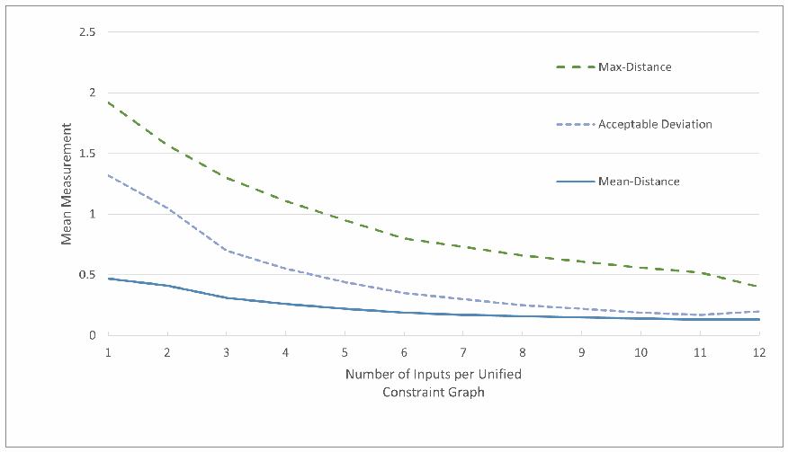
折れ線グラフです。横軸は「Number of Inputs per Unified Constraint Graph」（1〜12）、縦軸は「Mean Measurement」（0〜2.5）です。減少する3本の曲線があり、Max-Distance（緑の破線）は入力1で約1.93から12で約0.4へ、Acceptable Deviation（薄紫の破線）は約1.33から約0.2へ、Mean-Distance（青の実線）は約0.47から約0.13へ下がります。曲線は入力12に向けて平らになります。
Fig. 10. Decreasing Error with an Increasing Number of Inputs
図 10. 入力数の増加に伴う誤差の減少
and mean acceptable deviation were achieved as the curves end in an almost a horizontal line. For the mean max-distance, additional analysts would likely lower the measurement of distance somewhat. Unfortunately, additional qualified CVSS SIG analysts could not be obtained.
許容偏差の平均の両方で到達したようです。曲線がほぼ水平な線で終わっているためです。最大距離の平均については、アナリストを追加すれば、距離の測定値はおそらくある程度下がります。残念ながら、資格を持つ CVSS SIG のアナリストを追加で確保することはできませんでした。
8. Interpretation of Results and Related Work
8. 結果の解釈と関連研究
A variety of related works have explored perceived flaws in CVSS and recommended improvements. A subset of these enumerated flaws relate to the v3 base score equation itself. The results here address many of these concerns.
さまざまな関連研究が、CVSS に認識されている欠陥を調べ、改善を提案してきました。列挙されたこれらの欠陥の一部は、v3 ベーススコア方程式自体に関連しています。本書の結果は、これらの懸念の多くに対応しています。
One of the best listings of perceived flaws in CVSS is [15], which also contains suggestions that could be used to improve and/or revise CVSS or to create alternate scoring systems. One concern is that the metric values in CVSS v3 are ordinals (ordered categories), but they are converted into ratio data (allowing numerical differences with a zero value) within the v3 base score equation. The CVSS specification provides no justification for the assigning of numerical values to these ordinal values (e.g., Attack Vector Adjacent = 0.62). It also provides no justification for how the particular numerical values were chosen. By assigning numbers, difference relationships are established not only between ordinal values of a particular CVSS metric (e.g., privileges required) but between ordinal values of different unrelated metrics (e.g., confidentiality and attack complexity). Additionally, [15] points out that it provides no justification for the equation that then takes these numerical values as input. Although not mentioned in [15], many have questioned the complexity of the equation and why, for example, it has a term raised to the 15th power. Combining these concerns, [15] points out that the CVSS specification makes claims like “faster + fastest = 6” for which there is no empirical or theoretical justification. In summary, [15] says that the CVSS specification provides “little transparency on the formula creation process”. Other critiques of CVSS that express concern about the equations include [16], [17], [18], [19], [20], [21], and [22].
CVSS に認識されている欠陥の最も優れた一覧の 1 つは [15] で、ここには CVSS の改善や改訂、あるいは代替のスコアリングシステムの作成に使用できる提案も含まれています。懸念の 1 つは、CVSS v3 のメトリクス値が順序尺度（順序付けられたカテゴリ）であるにもかかわらず、v3 ベーススコア方程式の中で比率データ（ゼロの値を伴う数値の差を許容するもの）に変換されていることです。CVSS 仕様は、これらの順序尺度の値への数値の割り当て（たとえば Attack Vector Adjacent = 0.62）について、根拠を示していません。また、特定の数値がどのように選ばれたのかについても、根拠を示していません。数値を割り当てることで、特定の CVSS メトリクス（たとえば必要な権限）の順序尺度値の間だけでなく、無関係な異なるメトリクス（たとえば機密性と攻撃条件の複雑さ）の順序尺度値の間にも、差を持ち込むことになります。さらに [15] は、これらの数値を入力とする方程式についても根拠が示されていないと指摘しています。[15] には記載されていませんが、多くの人が、方程式の複雑さ、たとえばなぜ 15 乗された項があるのかに疑問を呈してきました。これらの懸念を総合して、[15] は、CVSS 仕様が「より速い + 最速 = 6」のような、経験的にも理論的にも根拠のない主張をしていると指摘しています。要約すると、[15] は、CVSS 仕様が「方程式の作成プロセスにほとんど透明性がない」と述べています。方程式に対する懸念を表明している CVSS の他の批判には、[16]、[17]、[18]、[19]、[20]、[21]、[22] があります。
The authors agree that such math is invalid in most cases. The formula creation process was opaque; the specific form of the v3 base score equation is not justified; and the equation is not human understandable. The improvement proposals in [15] and in the other critiques represent laudable goals. This said, the unjustified ratio math is acceptable if the use of the CVSS v3 scores is limited to creating an ordinal ranking of the vectors. This works in most cases as IT security organizations want to know how a particular vector ranks in severity compared to other vectors. The equation then becomes a black box that does not need to be justified or explainable. It simply needs to be tested to make sure that it produces the desired output ordinal rankings. This should not discourage its use as many effective computations are opaque boxes.
著者らは、そのような数学はほとんどの場合に妥当でないという点に同意します。式の作成プロセスは不透明で、v3 ベーススコア方程式の具体的な形は正当化されておらず、方程式は人間が理解できるものではありません。[15] やその他の批判での改善提案は、称賛に値する目標を表しています。とはいえ、CVSS v3 スコアの使用がベクトルの順序付けによるランキングの作成に限られるなら、根拠のない比率尺度の数学も許容されます。IT セキュリティ組織は、特定のベクトルが他のベクトルと比べて深刻度でどの位置にあるかを知りたいだけであるため、これはほとんどの場合に有効です。その場合、方程式は、正当化も説明も不要なブラックボックスになります。望ましい順序ランキングの出力が得られることを確認するために、テストするだけで十分です。多くの有効な計算はブラックボックスであるため、これが方程式の使用を妨げるべきではありません。
If one takes a step back to ask whether the v3 base score equation does what it claims to do, this research demonstrates that it does capture expert opinion within the “acceptable deviation” stated by the specification (measured at .2 versus the .5 advertised in the specification). However, the authors note that the acceptable deviation metric is not ideal due to its unintuitive definition and its focus on the optional binning from Table 3. For this reason, the metrics of mean and maximum scoring distance were added. The results for these two metrics enable a better understanding of the accuracy of the CVSS scores in representing CVSS expert domain knowledge. As shown in the results from Table 8, CVSS v3 has a mean scoring distance of .13 and a maximum scoring distance of .4 using the full input dataset. The CVSS v3 scores are very close to a set of scores completely consistent with the encoded human expert opinion (at least relative to the expected differences represented by the acceptable deviation of 0.5 in the specification).
一歩引いて、v3 ベーススコア方程式が主張どおりのことを行っているかを問うなら、本研究は、方程式が仕様に記載された「許容偏差」の範囲内で専門家の意見を捉えていることを示しています（仕様が示す 0.5 に対して、測定値は 0.2）。ただし著者らは、許容偏差メトリクスは、その定義が直感的でなく、表 3 の任意のビン分けに焦点を当てているため、理想的ではないと指摘します。このため、平均スコアリング距離と最大スコアリング距離のメトリクスを追加しました。この 2 つのメトリクスの結果により、CVSS の専門家の領域知識を表す CVSS スコアの精度をよりよく理解できます。表 8 の結果が示すとおり、入力データセット全体を用いた場合、CVSS v3 の平均スコアリング距離は 0.13、最大スコアリング距離は 0.4 です。CVSS v3 のスコアは、エンコードされた人間の専門家の意見と完全に整合するスコアの集合に非常に近いです（少なくとも、仕様の許容偏差 0.5 が表す想定上の差と比べれば）。
While the CVSS v3 equation represents the CVSS SIG expert domain knowledge very closely, it still does not represent it perfectly. The reason for this is the use of the generated equation. As stated previously, the goal of the equation is to approximate a partial lookup table. It achieves this goal to a measurable level for the set of 66 analyzed vectors (as seen by the measurements of mean and maximum scoring distance). One might ask why CVSS does not simply use a lookup table instead of a confusing equation. The answer is that the equation enables the scoring of all CVSS vectors, not just the ones that were human-evaluated. The equation strives to project CVSS SIG domain knowledge from a small, analyzed set to the complete set. This said, the accuracy of this projection to the applicable 2430 non-analyzed vectors has not been formally evaluated either in the CVSS v3 specification nor in this work.
CVSS v3 方程式は CVSS SIG の専門家の領域知識を非常に近く表していますが、それでも完全には表していません。その理由は、生成された方程式を使用していることにあります。前述のとおり、方程式の目標は、部分的な検索テーブルを近似することです。方程式は、分析した 66 個のベクトルの集合について、（平均スコアリング距離と最大スコアリング距離の測定値で示されるとおり）測定可能な水準でこの目標を達成しています。なぜ CVSS が、わかりにくい方程式の代わりに単純に検索テーブルを使用しないのかと問う人もいるかもしれません。その答えは、方程式を使えば、人間が評価したベクトルだけでなく、すべての CVSS ベクトルのスコアリングが可能になるからです。方程式は、小さな分析済みの集合から全体の集合へと、CVSS SIG の領域知識を投影しようとするものです。とはいえ、この投影が、分析されていない該当する 2430 個のベクトルにどの程度正確であるかは、CVSS v3 仕様でも本研究でも、正式には評価されていません。
9. Conclusion
9. 結論
This work evaluated the CVSS v3 base score equation and determined that its scores conform to the acceptable deviation stated in the specification relative to the encoded CVSS SIG domain knowledge. Furthermore, the authors added the metrics of mean and maximum scoring distance to find that the scores themselves (apart from any binning) are very close to a set of scores completely consistent with the encoded human expert opinion. The base score equation effectively reflects CVSS SIG human expert opinion (to the extent shown by these measurements).
本研究は、CVSS v3 ベーススコア方程式を評価し、そのスコアが、エンコードされた CVSS SIG の領域知識に対して、仕様に記載された許容偏差に適合していると判断しました。さらに著者らは、平均スコアリング距離と最大スコアリング距離のメトリクスを追加し、スコアそのもの（ビン分けとは別に）が、エンコードされた人間の専門家の意見と完全に整合するスコアの集合に非常に近いことを明らかにしました。ベーススコア方程式は、（これらの測定値で示される範囲で）CVSS SIG の人間の専門家の意見を効果的に反映しています。
References
参考文献
[1] Forum of Incident Response and Security Teams (2019) Common vulnerability scoring system v3.1: Specification document, https://www.first.org/cvss/v3.1/specification-document.
[1] Forum of Incident Response and Security Teams (2019) Common vulnerability scoring system v3.1: Specification document, https://www.first.org/cvss/v3.1/specification-document.
[2] National infrastructure advisory council, https://www.cisa.gov/niac.
[2] National infrastructure advisory council, https://www.cisa.gov/niac.
[3] Chambers J, Thompson J, Noonan T, Web M (2004) National infrastructure advisory council, common vulnerability scoring system, final report and recommendations by the council, https://www.cisa.gov/sites/default/files/publications/niac-common-vulnerability-scoring-final-report-10-12-04-508.pdf.
[3] Chambers J, Thompson J, Noonan T, Web M (2004) National infrastructure advisory council, common vulnerability scoring system, final report and recommendations by the council, https://www.cisa.gov/sites/default/files/publications/niac-common-vulnerability-scoring-final-report-10-12-04-508.pdf.
[4] Global forum of incident response and security teams, https://www.first.org/.
[4] Global forum of incident response and security teams, https://www.first.org/.
[5] Shiffman M (2005) Complete cvss v1 guide, https://www.first.org/cvss/v1/guide.
[5] Shiffman M (2005) Complete cvss v1 guide, https://www.first.org/cvss/v1/guide.
[6] Mell P, Scarfone K, Romanosky S (2007) A complete guide to the common vulnerability scoring system version 2.0, https://www.first.org/cvss/v2/guide.
[6] Mell P, Scarfone K, Romanosky S (2007) A complete guide to the common vulnerability scoring system version 2.0, https://www.first.org/cvss/v2/guide.
[7] Forum of Incident Response and Security Teams (2015) Common vulnerability scoring system v3.0: Specification document, https://www.first.org/cvss/v3.0/specification-document.
[7] Forum of Incident Response and Security Teams (2015) Common vulnerability scoring system v3.0: Specification document, https://www.first.org/cvss/v3.0/specification-document.
[8] Common vulnerability scoring system version 3.1 calculator, https://www.first.org/cvss/calculator/3.1.
[8] Common vulnerability scoring system version 3.1 calculator, https://www.first.org/cvss/calculator/3.1.
[9] Common vulnerability scoring system calculator, https://nvd.nist.gov/vuln-metrics/cvss/v3-calculator.
[9] Common vulnerability scoring system calculator, https://nvd.nist.gov/vuln-metrics/cvss/v3-calculator.
[10] Vincenti WG (1990) What engineers know and how they know it: Analytical studies from aeronautical history. Johns Hopkins Studies in the History of Technology (Johns Hopkins University Press, Baltimore and London).
[10] Vincenti WG (1990) What engineers know and how they know it: Analytical studies from aeronautical history. Johns Hopkins Studies in the History of Technology (Johns Hopkins University Press, Baltimore and London).
[11] Mell P (2022) The generation of security scoring systems leveraging human expert opinion. arXiv preprint arXiv:210513755 https://doi.org/https://doi.org/10.48550/arXiv.2105.13755
[11] Mell P (2022) The generation of security scoring systems leveraging human expert opinion. arXiv preprint arXiv:210513755 https://doi.org/https://doi.org/10.48550/arXiv.2105.13755
[12] Schwertman NC, Gilks A, Cameron J (1990) A simple noncalculus proof that the median minimizes the sum of the absolute deviations. The American Statistician 44(1):38–39. https://doi.org/10.1080/00031305.1990.10475690
[12] Schwertman NC, Gilks A, Cameron J (1990) A simple noncalculus proof that the median minimizes the sum of the absolute deviations. The American Statistician 44(1):38–39. https://doi.org/10.1080/00031305.1990.10475690
[13] Galton F (1907) Vox populi (the wisdom of crowds). Nature 75(7):450–451. https://doi.org/10.1038/075450a0
[13] Galton F (1907) Vox populi (the wisdom of crowds). Nature 75(7):450–451. https://doi.org/10.1038/075450a0
[14] Surowiecki J (2005) The wisdom of crowds (Anchor Books, New York).
[14] Surowiecki J (2005) The wisdom of crowds (Anchor Books, New York).
[15] Spring J, Hatleback E, Householder A, Manion A, Shick D (2021) Time to change the cvss? IEEE Security & Privacy 19(2):74–78. https://doi.org/10.1109/MSEC.2020.3044475
[15] Spring J, Hatleback E, Householder A, Manion A, Shick D (2021) Time to change the cvss? IEEE Security & Privacy 19(2):74–78. https://doi.org/10.1109/MSEC.2020.3044475
[16] Spring J, Hatleback E, Householder AD, Manion A, Shick D (2018) Towards improving cvss (Software Engineering Institute, Pittsburgh, PA),
[16] Spring J, Hatleback E, Householder AD, Manion A, Shick D (2018) Towards improving cvss (Software Engineering Institute, Pittsburgh, PA),
[17] Howland H (2021) A case against cvss: Vulnerability management done wrong, https://hlchowland.medium.com/a-case-against-cvss-vulnerability-management-done-wrong-99a0f8b740a3.
[17] Howland H (2021) A case against cvss: Vulnerability management done wrong, https://hlchowland.medium.com/a-case-against-cvss-vulnerability-management-done-wrong-99a0f8b740a3.
[18] Munaiah N, Meneely A (2016) Vulnerability severity scoring and bounties: Why the disconnect? Proceedings of the 2nd International Workshop on Software Analytics (ACM, New York, NY), pp 8–14. https://doi.org/10.1145/2989238.2989239
[18] Munaiah N, Meneely A (2016) Vulnerability severity scoring and bounties: Why the disconnect? Proceedings of the 2nd International Workshop on Software Analytics (ACM, New York, NY), pp 8–14. https://doi.org/10.1145/2989238.2989239
[19] Allodi L, Massacci F (2013) How cvss is dossing your patching policy (and wasting your money). blackhat USA 2013, 27 July-1 August 2013, Las Vegas, USA.
[19] Allodi L, Massacci F (2013) How cvss is dossing your patching policy (and wasting your money). blackhat USA 2013, 27 July-1 August 2013, Las Vegas, USA.
[20] Allodi L, Massacci F (2014) Comparing vulnerability severity and exploits using case-control studies. ACM Transactions on Information and System Security (TISSEC) 17(1):1–20. https://doi.org/10.1145/2630069
[20] Allodi L, Massacci F (2014) Comparing vulnerability severity and exploits using case-control studies. ACM Transactions on Information and System Security (TISSEC) 17(1):1–20. https://doi.org/10.1145/2630069
[21] Feutrill A, Ranathunga D, Yarom Y, Roughan M (2018) The effect of common vulnerability scoring system metrics on vulnerability exploit delay. 2018 Sixth International Symposium on Computing and Networking (CANDAR) (IEEE), pp 1–10. https://doi.org/10.1109/CANDAR.2018.00009
[21] Feutrill A, Ranathunga D, Yarom Y, Roughan M (2018) The effect of common vulnerability scoring system metrics on vulnerability exploit delay. 2018 Sixth International Symposium on Computing and Networking (CANDAR) (IEEE), pp 1–10. https://doi.org/10.1109/CANDAR.2018.00009
[22] Abramson JB (2018) A review of the common vulnerability scoring system, https://medium.com/critical-stack/a-review-of-the-common-vulnerability-scoring-system-2c7d266eda28.
[22] Abramson JB (2018) A review of the common vulnerability scoring system, https://medium.com/critical-stack/a-review-of-the-common-vulnerability-scoring-system-2c7d266eda28.
Appendix A. Acronyms
付録 A. 略語
Selected acronyms and abbreviations used in this paper are defined below.
本稿で使用している主な略語を以下に定義します。
AI Artificial Intelligence
AI 人工知能
CERT/CC Computer Emergency Response Team Coordination Center
CERT/CC コンピュータ緊急対応チーム調整センター
CVE Common Vulnerabilities and Exposures
CVE 共通脆弱性識別子
CVSS Common Vulnerability Scoring System
CVSS 共通脆弱性評価システム
DAG Directed Acyclic Graph
DAG 有向非巡回グラフ
FIRST Forum for Incident Response and Security Teams
FIRST インシデント対応・セキュリティチームフォーラム
GUI Graphical User Interface
GUI グラフィカルユーザーインターフェース
NIST National Institute of Standards and Technology
NIST 米国国立標準技術研究所
IR Interagency or Internal Report
IR 機関間報告書または内部報告書
NVD National Vulnerability Database
NVD 国家脆弱性データベース
SIG Special Interest Group
SIG 特別関心グループ
US United States
US 米国
CVSS base score vector string metrics and associated metric values:
(e.g., AV:N/AC:L/PR:N/UI:N/S:U/C:H/I:H/A:H):
CVSS ベーススコアのベクトル文字列のメトリクスと、関連するメトリクス値:
（例: AV:N/AC:L/PR:N/UI:N/S:U/C:H/I:H/A:H）:
AV (Attack Vector) (N: Network, A: Adjacent, L: Local, P: Physical)
AV (Attack Vector：攻撃元区分) (N: Network, A: Adjacent, L: Local, P: Physical)
AC (Attack Complexity) (L: Low, H: High)
AC (Attack Complexity：攻撃条件の複雑さ) (L: Low, H: High)
PR (Privileges Required) (N: None, L: Low, H: High)
PR (Privileges Required：必要な権限) (N: None, L: Low, H: High)
UI (User Interaction) (N: None, R: Required)
UI (User Interaction：ユーザーの関与) (N: None, R: Required)
S (Scope) (U: Unchanged, C: Changed)
S (Scope：スコープ) (U: Unchanged, C: Changed)
C (Confidentiality) (H: High, L: Low, N: None)
C (Confidentiality：機密性) (H: High, L: Low, N: None)
I (Integrity) (H: High, L: Low, N: None)
I (Integrity：完全性) (H: High, L: Low, N: None)
A (Availability) (H: High, L: Low, N: None)
A (Availability：可用性) (H: High, L: Low, N: None)
Appendix B. Set of Evaluated CVSS vectors
付録 B. 評価した CVSS ベクトルの集合
On January 8, 2021, NVD contained 73446 CVEs scored with CVSS version 3.1. The 66 most frequent CVSS vectors for these CVEs covers 90 % of them. These top 66 CVSS vectors are listed in Tables 9 and 10 using the CVSS Vector String format [1] along with their respective frequency counts. Appendix A contains expansions for the vector string acronyms.
2021 年 1 月 8 日時点で、NVD には CVSS バージョン 3.1 でスコアリングされた CVE が 73446 件含まれていました。これらの CVE で最も頻度の高い 66 個の CVSS ベクトルは、その 90 % をカバーします。この上位 66 個の CVSS ベクトルを、CVSS ベクトル文字列の形式 [1] で、それぞれの頻度のカウントとともに、表 9 と表 10 に示します。ベクトル文字列の略語の展開は、付録 A に記載しています。
Table 9. Top 66 Most Frequent CVSS Vectors per Mappings from NVD (higher frequency vectors)
表 9. NVD のマッピングによる最も頻度の高い CVSS ベクトル上位 66 件（頻度の高いベクトル）
| CVSS Vector | CVE Frequency |
|---|---|
| CVSS:3 | 9979 |
| CVSS:3 | 5572 |
| CVSS:3 | 4434 |
| CVSS:3 | 4378 |
| CVSS:3 | 3978 |
| CVSS:3 | 3834 |
| CVSS:3 | 3228 |
| CVSS:3 | 2847 |
| CVSS:3 | 2501 |
| CVSS:3 | 1626 |
| CVSS:3 | 1375 |
| CVSS:3 | 1371 |
| CVSS:3 | 1243 |
| CVSS:3 | 1119 |
| CVSS:3 | 1000 |
| CVSS:3 | 966 |
| CVSS:3 | 895 |
| CVSS:3 | 877 |
| CVSS:3 | 770 |
| CVSS:3 | 763 |
| CVSS:3 | 748 |
| CVSS:3 | 700 |
| CVSS:3 | 606 |
| CVSS:3 | 567 |
| CVSS:3 | 553 |
| CVSS:3 | 549 |
| CVSS:3 | 497 |
| CVSS:3 | 440 |
| CVSS:3 | 432 |
| CVSS:3 | 407 |
| CVSS:3 | 370 |
| CVSS:3 | 358 |
| CVSS:3 | 335 |
| CVSS ベクトル | CVE の頻度 |
|---|---|
| CVSS:3 | 9979 |
| CVSS:3 | 5572 |
| CVSS:3 | 4434 |
| CVSS:3 | 4378 |
| CVSS:3 | 3978 |
| CVSS:3 | 3834 |
| CVSS:3 | 3228 |
| CVSS:3 | 2847 |
| CVSS:3 | 2501 |
| CVSS:3 | 1626 |
| CVSS:3 | 1375 |
| CVSS:3 | 1371 |
| CVSS:3 | 1243 |
| CVSS:3 | 1119 |
| CVSS:3 | 1000 |
| CVSS:3 | 966 |
| CVSS:3 | 895 |
| CVSS:3 | 877 |
| CVSS:3 | 770 |
| CVSS:3 | 763 |
| CVSS:3 | 748 |
| CVSS:3 | 700 |
| CVSS:3 | 606 |
| CVSS:3 | 567 |
| CVSS:3 | 553 |
| CVSS:3 | 549 |
| CVSS:3 | 497 |
| CVSS:3 | 440 |
| CVSS:3 | 432 |
| CVSS:3 | 407 |
| CVSS:3 | 370 |
| CVSS:3 | 358 |
| CVSS:3 | 335 |
Table 10. Top 66 Most Frequent CVSS Vectors per Mappings from NVD (lower frequency vectors)
表 10. NVD のマッピングによる最も頻度の高い CVSS ベクトル上位 66 件（頻度の低いベクトル）
| CVSS Vector | CVE Frequency |
|---|---|
| CVSS:3 | 334 |
| CVSS:3 | 307 |
| CVSS:3 | 295 |
| CVSS:3 | 290 |
| CVSS:3 | 288 |
| CVSS:3 | 286 |
| CVSS:3 | 285 |
| CVSS:3 | 268 |
| CVSS:3 | 251 |
| CVSS:3 | 249 |
| CVSS:3 | 228 |
| CVSS:3 | 215 |
| CVSS:3 | 214 |
| CVSS:3 | 205 |
| CVSS:3 | 194 |
| CVSS:3 | 188 |
| CVSS:3 | 184 |
| CVSS:3 | 179 |
| CVSS:3 | 163 |
| CVSS:3 | 162 |
| CVSS:3 | 156 |
| CVSS:3 | 151 |
| CVSS:3 | 147 |
| CVSS:3 | 143 |
| CVSS:3 | 140 |
| CVSS:3 | 138 |
| CVSS:3 | 132 |
| CVSS:3 | 128 |
| CVSS:3 | 125 |
| CVSS:3 | 124 |
| CVSS:3 | 118 |
| CVSS:3 | 112 |
| CVSS:3 | 110 |
| CVSS ベクトル | CVE の頻度 |
|---|---|
| CVSS:3 | 334 |
| CVSS:3 | 307 |
| CVSS:3 | 295 |
| CVSS:3 | 290 |
| CVSS:3 | 288 |
| CVSS:3 | 286 |
| CVSS:3 | 285 |
| CVSS:3 | 268 |
| CVSS:3 | 251 |
| CVSS:3 | 249 |
| CVSS:3 | 228 |
| CVSS:3 | 215 |
| CVSS:3 | 214 |
| CVSS:3 | 205 |
| CVSS:3 | 194 |
| CVSS:3 | 188 |
| CVSS:3 | 184 |
| CVSS:3 | 179 |
| CVSS:3 | 163 |
| CVSS:3 | 162 |
| CVSS:3 | 156 |
| CVSS:3 | 151 |
| CVSS:3 | 147 |
| CVSS:3 | 143 |
| CVSS:3 | 140 |
| CVSS:3 | 138 |
| CVSS:3 | 132 |
| CVSS:3 | 128 |
| CVSS:3 | 125 |
| CVSS:3 | 124 |
| CVSS:3 | 118 |
| CVSS:3 | 112 |
| CVSS:3 | 110 |
Appendix C. Encoded Knowledge Constraint Graphs
付録 C. エンコードされたナレッジ制約グラフ
This appendix provides the graphs produced by the 12 CVSS SIG experts using the NIST Knowledge Encoding Tool. Figure 11 provides the raw graphs created by the tool. Figure 12 provides the simplified graphs in which the redundant edges have been removed. Additionally, all edges have been updated to originate from and terminate to the representative nodes (the ones with the greatest frequency) for each equivalency set. This does not change the logic represented by the graph.
この付録では、12 人の CVSS SIG の専門家が NIST ナレッジエンコーディングツールを用いて作成したグラフを示します。図 11 は、ツールが作成した未加工のグラフを示します。図 12 は、冗長な辺を除去した簡略化グラフを示します。さらに、すべての辺は、各同値集合の代表ノード（最も頻度が高いもの）から出て、代表ノードに入るように更新されています。これは、グラフが表す論理を変えません。
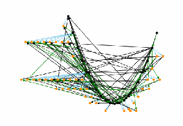
CVSS SIG の専門家1名が作成した生の知識制約グラフ 02c の図です。ノードはおおむねV字形に並び、緑と黒の辺が多数交差しています。知識制約グラフを点と矢印で描いた図です。黒い点は代表ノード、橙の点は同値集合に属するほかのベクトルで、水色の辺は等しい、緑の辺はより大きい、黒の辺ははるかに大きいことを表します。
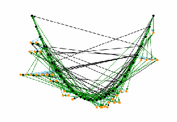
CVSS SIG の専門家1名が作成した生の知識制約グラフ 3d6 の図です。ノードはおおむねV字形に並び、緑と黒の辺が多数交差しています。知識制約グラフを点と矢印で描いた図です。黒い点は代表ノード、橙の点は同値集合に属するほかのベクトルで、水色の辺は等しい、緑の辺はより大きい、黒の辺ははるかに大きいことを表します。
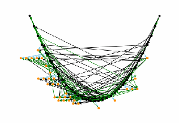
CVSS SIG の専門家1名が作成した生の知識制約グラフ 5fd の図です。ノードはおおむねV字形に並び、緑と黒の辺が多数交差しています。知識制約グラフを点と矢印で描いた図です。黒い点は代表ノード、橙の点は同値集合に属するほかのベクトルで、水色の辺は等しい、緑の辺はより大きい、黒の辺ははるかに大きいことを表します。
(a) 02c
(a) 02c
(b) 3d6
(b) 3d6
(c) 5fd
(c) 5fd
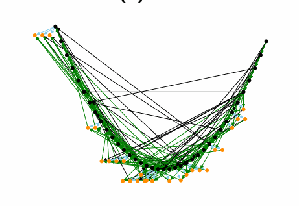
CVSS SIG の専門家1名が作成した生の知識制約グラフ 6e5 の図です。ノードはおおむねV字形に並び、緑と黒の辺が多数交差しています。知識制約グラフを点と矢印で描いた図です。黒い点は代表ノード、橙の点は同値集合に属するほかのベクトルで、水色の辺は等しい、緑の辺はより大きい、黒の辺ははるかに大きいことを表します。
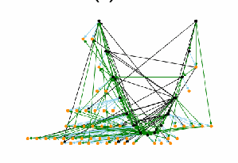
CVSS SIG の専門家1名が作成した生の知識制約グラフ 70a の図です。ノードはおおむねV字形に並び、緑と黒の辺が多数交差しています。知識制約グラフを点と矢印で描いた図です。黒い点は代表ノード、橙の点は同値集合に属するほかのベクトルで、水色の辺は等しい、緑の辺はより大きい、黒の辺ははるかに大きいことを表します。
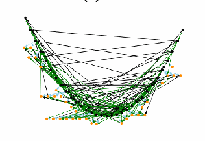
CVSS SIG の専門家1名が作成した生の知識制約グラフ 88d の図です。ノードはおおむねV字形に並び、緑と黒の辺が多数交差しています。知識制約グラフを点と矢印で描いた図です。黒い点は代表ノード、橙の点は同値集合に属するほかのベクトルで、水色の辺は等しい、緑の辺はより大きい、黒の辺ははるかに大きいことを表します。
(d) 6e5
(d) 6e5
(e) 70a
(e) 70a
(f) 88d
(f) 88d
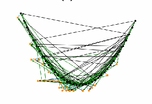
CVSS SIG の専門家1名が作成した生の知識制約グラフ 908 の図です。ノードはおおむねV字形に並び、緑と黒の辺が多数交差しています。知識制約グラフを点と矢印で描いた図です。黒い点は代表ノード、橙の点は同値集合に属するほかのベクトルで、水色の辺は等しい、緑の辺はより大きい、黒の辺ははるかに大きいことを表します。
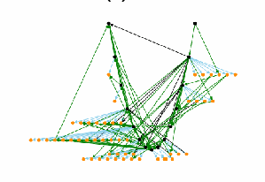
CVSS SIG の専門家1名が作成した生の知識制約グラフ 977 の図です。ノードはおおむねV字形に並び、緑と黒の辺が多数交差しています。知識制約グラフを点と矢印で描いた図です。黒い点は代表ノード、橙の点は同値集合に属するほかのベクトルで、水色の辺は等しい、緑の辺はより大きい、黒の辺ははるかに大きいことを表します。
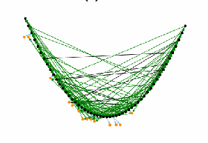
CVSS SIG の専門家1名が作成した生の知識制約グラフ 98a の図です。ノードはおおむねV字形に並び、緑と黒の辺が多数交差しています。知識制約グラフを点と矢印で描いた図です。黒い点は代表ノード、橙の点は同値集合に属するほかのベクトルで、水色の辺は等しい、緑の辺はより大きい、黒の辺ははるかに大きいことを表します。
(g) 908
(g) 908
(h) 977
(h) 977
(i) 98a
(i) 98a
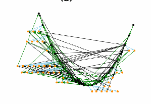
CVSS SIG の専門家1名が作成した生の知識制約グラフ d3d の図です。ノードはおおむねV字形に並び、緑と黒の辺が多数交差しています。知識制約グラフを点と矢印で描いた図です。黒い点は代表ノード、橙の点は同値集合に属するほかのベクトルで、水色の辺は等しい、緑の辺はより大きい、黒の辺ははるかに大きいことを表します。
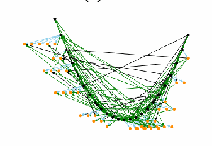
CVSS SIG の専門家1名が作成した生の知識制約グラフ f00 の図です。ノードはおおむねV字形に並び、緑と黒の辺が多数交差しています。知識制約グラフを点と矢印で描いた図です。黒い点は代表ノード、橙の点は同値集合に属するほかのベクトルで、水色の辺は等しい、緑の辺はより大きい、黒の辺ははるかに大きいことを表します。
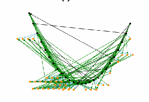
CVSS SIG の専門家1名が作成した生の知識制約グラフ f59 の図です。ノードはおおむねV字形に並び、緑と黒の辺が多数交差しています。知識制約グラフを点と矢印で描いた図です。黒い点は代表ノード、橙の点は同値集合に属するほかのベクトルで、水色の辺は等しい、緑の辺はより大きい、黒の辺ははるかに大きいことを表します。
(j) d3d
(j) d3d
(k) f00
(k) f00
(l) f59
(l) f59
Fig. 11. Raw Graphs Produced by the Knowledge Encoding Tool for the 12 CVSS SIG Experts
図 11. ナレッジエンコーディングツールが CVSS SIG の専門家 12 人について生成した未加工のグラフ
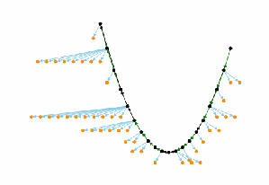
CVSS SIG の専門家1名が作成した簡略化した知識制約グラフ 02c の図です。黒い代表ノードがV字形の最長経路をなし、水色の辺で橙のノードが扇状に広がっています。知識制約グラフを点と矢印で描いた図です。黒い点は代表ノード、橙の点は同値集合に属するほかのベクトルで、水色の辺は等しい、緑の辺はより大きい、黒の辺ははるかに大きいことを表します。
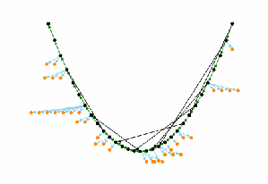
CVSS SIG の専門家1名が作成した簡略化した知識制約グラフ 3d6 の図です。黒い代表ノードがV字形の最長経路をなし、水色の辺で橙のノードが扇状に広がっています。知識制約グラフを点と矢印で描いた図です。黒い点は代表ノード、橙の点は同値集合に属するほかのベクトルで、水色の辺は等しい、緑の辺はより大きい、黒の辺ははるかに大きいことを表します。
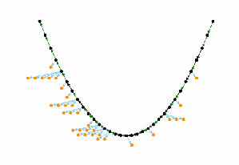
CVSS SIG の専門家1名が作成した簡略化した知識制約グラフ 5fd の図です。黒い代表ノードがV字形の最長経路をなし、水色の辺で橙のノードが扇状に広がっています。知識制約グラフを点と矢印で描いた図です。黒い点は代表ノード、橙の点は同値集合に属するほかのベクトルで、水色の辺は等しい、緑の辺はより大きい、黒の辺ははるかに大きいことを表します。
(a) 02c
(a) 02c
(b) 3d6
(b) 3d6
(c) 5fd
(c) 5fd
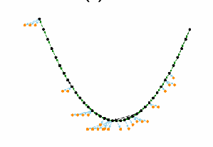
CVSS SIG の専門家1名が作成した簡略化した知識制約グラフ 6e5 の図です。黒い代表ノードがV字形の最長経路をなし、水色の辺で橙のノードが扇状に広がっています。知識制約グラフを点と矢印で描いた図です。黒い点は代表ノード、橙の点は同値集合に属するほかのベクトルで、水色の辺は等しい、緑の辺はより大きい、黒の辺ははるかに大きいことを表します。
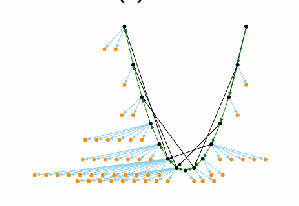
CVSS SIG の専門家1名が作成した簡略化した知識制約グラフ 70a の図です。黒い代表ノードがV字形の最長経路をなし、水色の辺で橙のノードが扇状に広がっています。知識制約グラフを点と矢印で描いた図です。黒い点は代表ノード、橙の点は同値集合に属するほかのベクトルで、水色の辺は等しい、緑の辺はより大きい、黒の辺ははるかに大きいことを表します。
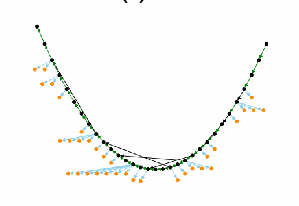
CVSS SIG の専門家1名が作成した簡略化した知識制約グラフ 88d の図です。黒い代表ノードがV字形の最長経路をなし、水色の辺で橙のノードが扇状に広がっています。知識制約グラフを点と矢印で描いた図です。黒い点は代表ノード、橙の点は同値集合に属するほかのベクトルで、水色の辺は等しい、緑の辺はより大きい、黒の辺ははるかに大きいことを表します。
(d) 6e5
(d) 6e5
(e) 70a
(e) 70a
(f) 88d
(f) 88d
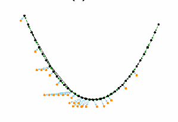
CVSS SIG の専門家1名が作成した簡略化した知識制約グラフ 908 の図です。黒い代表ノードがV字形の最長経路をなし、水色の辺で橙のノードが扇状に広がっています。知識制約グラフを点と矢印で描いた図です。黒い点は代表ノード、橙の点は同値集合に属するほかのベクトルで、水色の辺は等しい、緑の辺はより大きい、黒の辺ははるかに大きいことを表します。
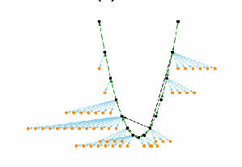
CVSS SIG の専門家1名が作成した簡略化した知識制約グラフ 977 の図です。黒い代表ノードがV字形の最長経路をなし、水色の辺で橙のノードが扇状に広がっています。知識制約グラフを点と矢印で描いた図です。黒い点は代表ノード、橙の点は同値集合に属するほかのベクトルで、水色の辺は等しい、緑の辺はより大きい、黒の辺ははるかに大きいことを表します。
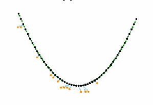
CVSS SIG の専門家1名が作成した簡略化した知識制約グラフ 98a の図です。黒い代表ノードがV字形の最長経路をなし、水色の辺で橙のノードが扇状に広がっています。知識制約グラフを点と矢印で描いた図です。黒い点は代表ノード、橙の点は同値集合に属するほかのベクトルで、水色の辺は等しい、緑の辺はより大きい、黒の辺ははるかに大きいことを表します。
(g) 908
(g) 908
(h) 977
(h) 977
(i) 98a
(i) 98a
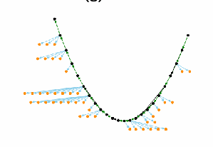
CVSS SIG の専門家1名が作成した簡略化した知識制約グラフ d3d の図です。黒い代表ノードがV字形の最長経路をなし、水色の辺で橙のノードが扇状に広がっています。知識制約グラフを点と矢印で描いた図です。黒い点は代表ノード、橙の点は同値集合に属するほかのベクトルで、水色の辺は等しい、緑の辺はより大きい、黒の辺ははるかに大きいことを表します。
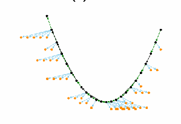
CVSS SIG の専門家1名が作成した簡略化した知識制約グラフ f00 の図です。黒い代表ノードがV字形の最長経路をなし、水色の辺で橙のノードが扇状に広がっています。知識制約グラフを点と矢印で描いた図です。黒い点は代表ノード、橙の点は同値集合に属するほかのベクトルで、水色の辺は等しい、緑の辺はより大きい、黒の辺ははるかに大きいことを表します。
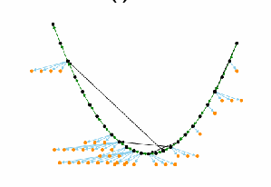
CVSS SIG の専門家1名が作成した簡略化した知識制約グラフ f59 の図です。黒い代表ノードがV字形の最長経路をなし、水色の辺で橙のノードが扇状に広がっています。知識制約グラフを点と矢印で描いた図です。黒い点は代表ノード、橙の点は同値集合に属するほかのベクトルで、水色の辺は等しい、緑の辺はより大きい、黒の辺ははるかに大きいことを表します。
(j) d3d
(j) d3d
(k) f00
(k) f00
(l) f59
(l) f59
Fig. 12. Simplified Graphs with Redundant Edges Removed
図 12. 冗長な辺を除去した簡略化グラフ